Was shoebox besonders macht
Vier Dinge, die shoebox von anderen Foto-Verwaltungen unterscheiden.
-
Deine Fotos bleiben deine
shoebox hat keinen Import und keine eigene Bibliothek, in die deine Fotos eingesperrt werden. Deine Ordner bleiben genau so, wie du sie angelegt hast, und in deine Dateien wird nie geschrieben: Tags, Daten und Orte stehen in seinem eigenen Index. Eine Datei ändert sich nur, wenn du sie verschiebst, umbenennst oder in den Papierkorb legst oder ein JPEG drehst. Siehe „Deine Fotos sind sicher“.
-
Liegt auf deinem Laufwerk und bleibt klein
Alles, was shoebox speichert, liegt in einem versteckten Ordner
.shoeboxneben deinen Fotos, ist also dabei, wenn du das Laufwerk an einen anderen Computer steckst. Es fügt unter 1 GB bei 80 GB Fotos hinzu (etwa 1 %), gemessen an einer echten Bibliothek mit 31 GB, einschließlich der Daten der Gesichtserkennung. Das Lesen der Wörter in deinen Fotos kommt mit etwa 25 MB bei 100 GB Fotos dazu (geschätzt; ein Laufwerk voller gescannter Dokumente braucht mehr). -
Gemacht für den Datei-Manager
Du ordnest im Finder oder Explorer, und ein schneller Scan übernimmt die Änderungen. Ordner zählen als Tags.
-
Lokale Erkennung, optionale Karten
Gesichter, Katzen und Hunde werden auf deinem eigenen Computer erkannt, und Karten sind aus, bis du sie einschaltest. Keine Cloud, kein Konto.
Was shoebox kann
Eine Seite im Browser, eine Zeitleiste von allem auf dem Laufwerk.
-
Einlesen
Mit Scannen liest shoebox deine Fotos in den Index ein und sammelt, was eine Foto-App braucht, etwa Datum, Größe und Orte. Spätere Scans sehen nur an, was sich geändert hat.
-
Duplikate
Findet identische, verkleinerte, bearbeitete und ähnliche Fotos. Du prüfst; die beste Kopie bleibt immer.
-
Mehrere Laufwerke
Mehrere Laufwerke in einer gemeinsamen Zeitleiste durchstöbern. Backups werden erkannt und geprüft.
-
Sicherer Papierkorb
Gelöschte Fotos landen in einem Papierkorb auf dem Laufwerk. Zurücklegen oder endgültig löschen.
-
Verschieben & ordnen
Fotos in einen Ordner verschieben (wird bei Bedarf angelegt). RAW-, Live-Photo- und Begleitdateien (Sidecar) wandern mit.
-
Tags
Eigene Tags (Schlagwörter) für viele Fotos auf einmal. Auch Ordner zählen als Tags. Im Index gespeichert, nie in den Fotos. „Tag“ heißt auf Deutsch Schlagwort.
-
Sammeln & exportieren
Fotos für eine Druckbestellung, ein Album oder ein Geburtstagsvideo mit einem Klick sammeln und dann als nummerierten Ordner auf deinen Computer oder einen USB-Stick kopieren. Deine Originale bleiben, wie sie sind.
-
Zeitleiste
Alle Fotos und Videos nach Monat, mit Jahressprung, Ordnerbaum und einer Ansicht mit Infos zum Foto. Ein Foto kann ein eigenes Datum bekommen.
-
Suchen & Filtern
Tippe eine Person, ein Haustier, einen Tag, einen Ordner oder ein Datum wie Juni 1987 und kombiniere sie als Chips. Mit
text:findest du Wörter in Fotos, mitname:Dateinamen; filtere nach Typ oder zeige nur deine Favoriten ♥. -
Personen & Haustiere
Optionale Erkennung gruppiert Gesichter, Katzen und Hunde. Du vergibst Namen, shoebox schlägt den Rest vor.
-
Orte
Optionale Karten, standardmäßig aus: eine Karte in den Infos von Fotos mit GPS-Daten, eine Weltkarte aller deiner Fotos und benannte Orte wie „Zuhause“, die ihre Fotos von selbst sammeln.
Die Oberfläche im Überblick
Alles ist auf einer Seite. So findest du dich zurecht.
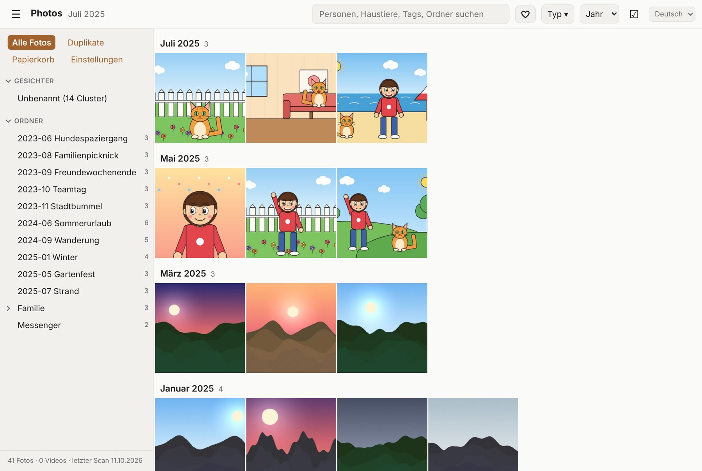
1 2 3 4 5 6 7 8 9 10 11-
Ordner-Menü
☰ blendet die Seitenleiste auf schmalen Bildschirmen ein oder aus.
-
Suchfeld
Personen, Haustiere, Tags, Ordner und Datum; mehrere wählen, um sie zu kombinieren.
-
Favoriten ♥
Nur die Fotos zeigen, die du mit einem Herz markiert hast. Auch zu finden, wenn du favorit ins Suchfeld tippst.
-
Typ
Hake an, was gezeigt werden soll (Fotos, Videos, Live Photos, Screenshots); ohne Haken wird alles gezeigt. Was du anhakst, erscheint auch als Chip über den Fotos. Siehe „Finden und ordnen“.
-
Jahr
Direkt zu einem Jahr springen.
-
Auswählen ☑
Fotos zum Verschieben, Taggen oder in den Papierkorb wählen.
-
Schnellzugriff
Alle Fotos · Datum fehlt (nur wenn bei manchen Fotos eines fehlt) · Duplikate · Papierkorb · Einstellungen.
-
Ordner
Deine Ordner mit Anzahl. Tags, Gesichter und Laufwerke erscheinen hier, sobald es sie gibt, und Orte, wenn Karten eingeschaltet sind.
-
Zeitleiste
Monate mit Anzahl. Ein Klick auf ein Foto öffnet die Ansicht.
-
Sprache
Zwischen Deutsch und Englisch wechseln.
-
Status
Scan-, Vorschau- und Laufwerksstatus unten in der Seitenleiste.
Ein typischer Ablauf
Laufwerk anstecken und Start shoebox doppelklicken. Scannen und die Foto-App öffnen. Für die Fotos eines Ereignisses den Ordner im Finder aufs Laufwerk kopieren (benannt wie 2025-08 Urlaub) und erneut scannen. Dann taggen und sortieren. Ab und zu die Duplikate ansehen und nach jedem Backup die Backup-Prüfung laufen lassen.
Sich zurechtfinden
Obere Leiste und Seitenleiste: wo du bist und was sich zuklappen lässt.
Wo du bist
Die obere Leiste nennt, wo du bist. Neben dem Laufwerksnamen zeigt sie auf der Zeitleiste den Monat, den du gerade ansiehst (das Menü Jahr springt zu einem Jahr), und auf jeder anderen Seite (Duplikate, Papierkorb, Einstellungen, Gesichter, …) den Namen dieser Seite.

Zuklappen, was du nicht brauchst
Die Bereiche Gesichter, Tags, Ordner und Orte klappst du mit dem Pfeil oder per Klick auf den Titel zu und auf (Gesichter und Orte öffnen dabei auch ihre Seite). Ein Bereich, der deine aktuelle Auswahl enthält, bleibt offen.
Ordner
Der Bereich Ordner spiegelt die Ordner deines Laufwerks, mit ihrer Anzahl. Ein Klick zeigt nur dessen Fotos. Einen Ordner kannst du über seinen Chip über den Fotos umbenennen oder verschieben.
In drei Schritten loslegen
macOS (Intel ab 10.13 und Apple Silicon) und Windows 10 oder 11 (64 Bit, Intel oder AMD). Zum Ansehen und Scannen ist nichts zu installieren; Gesichter-, Haustier- und Texterkennung sind Erweiterungen, die du in der Zentrale installierst.
-
Entpacken und festlegen, wo es liegt
shoebox-macos.tar.gz aus dem Release entpacken (im Finder doppelklicken). Du bekommst einen Ordner shoebox-macos (der Name sagt, für welches System er ist) mit drei Dingen darin: Start shoebox.command, das shoebox startet; diesem Handbuch im Ordner guide; und dem Ordner program mit allem anderen: dem Programm shoebox, den beiden Dateien, mit denen es HEIC-Fotos liest (libheif.1.dylib und libde265.0.dylib), dem Ordner recognizer (dem Installer für die Erweiterungen), dem Quellcode dieser beiden Bibliotheken im Ordner sources und den Lizenzen. program musst du nie öffnen. Den Ordner zusammenlassen; keine einzelnen Dateien herausziehen: Ohne seine beiden Bibliotheken daneben startet das Programm nicht.
Unter Windows heißt der Download shoebox-windows.zip: mit der rechten Maustaste anklicken, Alle extrahieren wählen, und du bekommst den Ordner shoebox-windows mit denselben drei Dingen: Start shoebox.bat, guide und program (dort heißt das Programm shoebox.exe, seine beiden Dateien heif.dll und libde265.dll). Alles in diesem Handbuch funktioniert genauso; ein Laufwerk ist ein Buchstabe wie
E:\statt/Volumes/MeinLaufwerk.Dann einen von zwei Wegen wählen:
Auf dem Laufwerk (am besten, wenn du das Laufwerk zu anderen Computern mitnimmst): den ganzen Ordner shoebox-macos in den obersten Ordner deines Foto-Laufwerks kopieren, neben deine Fotoordner, sodass es
/Volumes/MeinLaufwerk/shoebox-macos/gibt. Einen Ordner .shoebox nicht selbst anlegen: shoebox erstellt ihn beim ersten Scan auf dem Laufwerk. Erweiterungen, die du später installierst, liegen inshoebox-macos/program/recognizerauf dem Laufwerk und reisen mit.Auf deinem Computer: den ganzen entpackten Ordner shoebox-macos an einen Ort verschieben, an dem er bleiben soll (zum Beispiel Dokumente, nicht Downloads), und seine Dateien zusammenlassen, aber nicht in einem Ordner, den ein Cloud-Dienst synchronisiert (iCloud Drive, OneDrive, Dropbox, Google Drive): Dort lassen sich die Erweiterungen nicht installieren. Windows legt Dokumente und Desktop oft in OneDrive, unter Windows ist
C:\shoeboxdeshalb ein guter Ort. Von dort öffnest du ihn für jedes Laufwerk, das du ansteckst; Erweiterungen werden einmal in seinen Ordner program/recognizer installiert und für alle Laufwerke genutzt. Der Bibliotheks-Index (ein versteckter Ordner .shoebox) liegt in beiden Fällen auf dem jeweiligen Laufwerk. -
Zentrale öffnen
Start shoebox.command doppelklicken (auf dem Laufwerk oder im Ordner auf deinem Computer). Ein Terminal-Fenster öffnet sich (offen lassen) und die Zentrale erscheint im Browser. Beim ersten Mal nach einem Download kann macOS das Öffnen verweigern, weil es die Datei nicht nach Schadsoftware durchsuchen kann: Systemeinstellungen → Datenschutz & Sicherheit öffnen, nach unten zur Zeile über Start shoebox.command scrollen und Dennoch öffnen drücken (vor macOS 15: die Datei per Rechtsklick mit Öffnen starten). shoebox immer mit dieser Datei starten, nicht mit shoebox im Ordner program: Sie nimmt zuerst den Download-Vermerk vom Programm und seinen beiden Bibliotheken, die macOS sonst blockiert.
Unter Windows Start shoebox.bat doppelklicken. Ein schwarzes Fenster öffnet sich (offen lassen) und die Zentrale erscheint im Browser. Zeigt Windows Der Computer wurde durch Windows geschützt, auf Weitere Informationen und dann Trotzdem ausführen klicken: shoebox ist nicht mit einem kostenpflichtigen Zertifikat signiert, deshalb kennt Windows es noch nicht.
-
Erweiterungen, scannen, dann öffnen
Nur wenn Personen, Haustiere oder die Wörter in deinen Fotos erkannt werden sollen: in Schritt 1, Erweiterungen, anhaken, was du willst (Gesichter, Haustiere, Text oder beliebig gemischt; jedes geht ohne die anderen), und Ausgewählte Erweiterungen installieren drücken. Die Zentrale listet, was geladen wird: das Programm Python und OpenCV (etwa 200 MB, einmal für alle Erweiterungen), Gesichter (etwa 40 MB), Haustiere (etwa 140 MB) und Text (etwa 100 MB). Internet nötig, einige Minuten. Python und OpenCV wird immer mit der ersten Erweiterung installiert (sein Kästchen ist angehakt und lässt sich nicht abwählen). Solange eine Erweiterung fehlt, bleibt ihr Erkennen-Knopf grau und sagt warum.
Dann deine Fotos hinzufügen: Auswählen… drücken und den Ordner wählen, oder den Pfad tippen (zum Beispiel
/Volumes/MeinLaufwerk/Fotos, unter WindowsE:\Fotos) und Enter drücken. Ein Klick auf ein erkanntes Laufwerk beginnt den Pfad im Feld, damit du ihn zu Ende schreibst (nur Enter fügt das ganze Laufwerk hinzu), und ein Doppelklick auf einen Ordner in der Liste lässt dich seinen Pfad ändern. Dann Scannen, dann Foto-App starten. Die Zentrale merkt sich die Laufwerke, die du zuletzt angehakt hattest; ist eines nicht angesteckt, ist sein Chip gestrichelt und Foto-App starten bleibt aus, mit dem Grund in Rot, bis du es ansteckst oder den Haken entfernst.Fotos auf einem Server, oder ein Ordner, den du nur ansehen willst? Unter den Laufwerken listet Bibliotheken neben dem Programm Ordner, deren Index neben dem Programm liegt (mit separat markiert) statt im Ordner selbst. Auf + Ordner oder Server hinzufügen… drücken, Auswählen… drücken oder den Pfad eintippen (zum Beispiel
\\server\freigabe\Fotosoder/Volumes/Server/Fotos), Separat (neben dem Programm) wählen und Hinzufügen drücken, dann wie gewohnt Scannen. shoebox geht durch jeden Unterordner, findet die Fotos und führt seine Liste in einem Ordner libraries neben dem Programm. In den Ordner wird nichts geschrieben, auch kein Ordner .shoebox, und seine Fotos können nur angesehen, nie verschoben, umbenannt oder gelöscht werden (die Foto-App zeigt dafür keine Schaltflächen zum Verschieben, Drehen oder für den Papierkorb; Tags, Daten und Namen funktionieren weiter). Mit Verwalten… benennst du eine Bibliothek um, gibst ihr einen anderen Ordner (der Index bleibt erhalten), nimmst sie aus der Liste oder löschst ihren Index (deine Tags, Datumsangaben und Namen dazu gehen mit; die Fotos bleiben unberührt). Der erste Scan eines großen Servers kann Stunden dauern; du kannst abbrechen und später weitermachen.Der erste Scan liest jede Datei einmal und dauert bei großen Laufwerken eine Weile; später werden nur Änderungen angesehen. Nach dem Scan listen die Reiter Verschoben, Geändert, Fehlend und Schon auf dem Laufwerk (jeweils mit Anzahl) genau auf, um welche Dateien es geht; bei neuen Dateien, die du schon hattest, steht die ältere Kopie gleich daneben.
Text (die Wörter in deinen Fotos lesen: Dokumente, Screenshots, Straßenschilder, Speisekarten) funktioniert genauso und ist unter „Wörter in Fotos“ erklärt: Text anhaken, installieren, dann in Schritt 3 Text erkennen drücken. Es liest nur, es ist langsam, und du kannst abbrechen und später weitermachen.
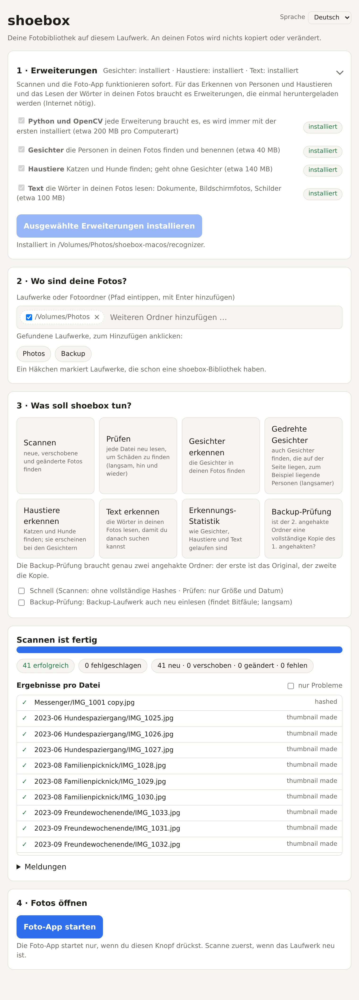
Aufgaben in der Zentrale
- Scannen neue, verschobene und geänderte Fotos finden. Schnell: es schaut nur auf das, was sich seit dem letzten Scan geändert hat. Nach dem Verschieben, Umbenennen oder Hinzufügen von Fotos ausführen.
- Prüfen
- prüfen, dass nichts verloren oder beschädigt ist. Es liest jede Datei neu und vergleicht sie mit dem, was der Index kennt; so findet es Dateien, die auf dem Laufwerk unbemerkt beschädigt wurden. Langsam, also hin und wieder ausführen (alle paar Monate oder bevor man sich auf ein Backup verlässt), nicht nach jedem Verschieben. Verschiebungen sind nicht seine Sache: ein verschobenes Foto hat im Index seinen neuen Platz und besteht die Prüfung. Ein Foto, dessen Pfad weg ist, dessen Inhalt aber anderswo auf dem Laufwerk noch liegt (eine gelöschte Kopie), steht als „umgezogen“ in der Liste, nicht als Fehler. Nur Inhalt, der nirgends mehr auf dem Laufwerk liegt, zählt als fehlend. Fehlen Dateien, erscheint nach der Prüfung (und nach einem Scan) ein Knopf, der ihre Einträge vergisst: sie werden aus dem shoebox-Index, seiner Datenbank auf dem Laufwerk, entfernt. Keine Fotodatei wird angefasst.
- Gesichter erkennen
- die Gesichter in deinen Fotos finden (mit „Haustiere erkennen“ auch Katzen und Hunde). Braucht die Erweiterung „Gesichter“.
- Gedrehte Gesichter
- auch Gesichter finden, die auf der Seite liegen, zum Beispiel liegende Personen (langsamer). Braucht die Erweiterung „Gesichter“.
- Haustiere erkennen
- Katzen und Hunde finden; sie erscheinen bei den Gesichtern. Braucht die Erweiterung „Haustiere“, nicht die für Gesichter.
- Text erkennen die Wörter in deinen Fotos lesen. Braucht die Erweiterung „Text“. Siehe „Wörter in Fotos“.
- Erkennungsstatistik
- wie Gesichts-, Haustier- und Texterkennung gelaufen sind: angesehene Fotos, Funde, benannte Personen, was noch zu tun ist. Liest nur.
- Backup-Prüfung
- ist der 2. Ordner eine vollständige Kopie des 1.?
Mehrere Computer und Systeme
- Wo die Erweiterungen gesucht werden: nur im Ordner recognizer neben dem gestarteten shoebox-Programm. Ein shoebox-Ordner auf deinem Computer wird also für jedes Laufwerk benutzt. Erweiterungen im versteckten
.shoebox-Ordner eines Laufwerks werden nie gestartet: Ein Laufwerk, das du von jemand anderem bekommst, könnte ein eigenes Programm mitbringen. - Modelle und Python sind zweierlei. Die Modelle (Gesichter, Haustiere, Text) sind auf jedem Computer gleich. Python und OpenCV gibt es je Computerart: Intel-Mac, Apple-Silicon-Mac, Linux, Windows. Nimmst du ein Laufwerk mit shoebox-macos von einem Intel-MacBook zu einem neueren mit, zeigt Schritt 1 dort bei Python und OpenCV nötig, deine Erweiterungen sagen Modelle da, braucht Python für diesen Computer, und die Erkennen-Knöpfe sind grau. Dort einmal Ausgewählte Erweiterungen installieren drücken: Es wird nur das fehlende Python geladen, die Modelle bleiben. Beide Arten liegen dann nebeneinander im selben Ordner recognizer, und jeder Computer nutzt seine eigene.
- Text liest ein Computer, nutzen können ihn alle. Die Wörter werden auf dem Laufwerk gespeichert (in
.shoebox/recognition.db), nicht auf dem Computer. Ist Text erkennen auf einem alten Mac zu langsam oder läuft dort gar nicht, drücke es auf einem neueren Computer mit dem eingesteckten Laufwerk. Die Erweiterung „Text“ installiert zwei Programme (onnxruntime und rapidocr) in das Python des Ordners recognizer, wird also einmal je Computerart installiert; ihre Modelle bleiben erhalten. - Mac und Windows auf einem Laufwerk: beide Ordner in den obersten Ordner des Laufwerks kopieren:
shoebox-macosundshoebox-windows. Jeder hat seinen eigenen Ordner recognizer; Modelle, die du im einen installierst, gelten also nicht im anderen. Gestartet wird aus dem Ordner des Systems, an dem du sitzt. Beide nutzen denselben versteckten Index.shoeboxauf dem Laufwerk. Die Erweiterungen lassen sich auch unter Windows mit demselben Knopf installieren: Dafür braucht es Windows 10 oder 11 auf einem 64-Bit-Intel- oder AMD-Prozessor, sonst nichts, was vorher installiert sein müsste.
Video-Vorschauen und ffmpeg (optional)
Für Video-Vorschauen brauchst du nichts extra. Auf einem Mac macht Scannen sie mit dem Video-System von macOS selbst (dem, das QuickTime nutzt), für jedes Video, das QuickTime abspielen kann. Kann shoebox eine nicht selbst machen (ein älteres Camcorder-Format, oder unter Linux), holt dein Browser ein Bild aus dem Video, sobald es zum ersten Mal zu sehen ist, und shoebox behält es in thumbs.db (das Video selbst wird nie verändert). ffmpeg, ein kostenloses Werkzeug, das ein Bild aus einem Video holt, ist optional. Es hilft, wenn:
- unter Linux jedes Video gleich nach dem Scannen seine Vorschau haben soll, nicht erst, wenn es einmal zu sehen war;
- dein Mac und dein Browser manche deiner Videos nicht lesen können: ältere Camcorder-Dateien wie
.avi,.mkv,.mtsoder.mpg, oder HEVC-Videos (das Format neuerer iPhones) auf einem Windows-PC ohne Microsofts HEVC-Videoerweiterungen. ffmpeg bringt eigene Decoder mit und braucht keine Erweiterung. Es macht nur die Vorschau: Abspielen lässt sich so ein Video weiterhin nur in einem Browser, der es kann.
shoebox sucht es im selben Ordner wie das Programm shoebox, dem Ordner program (die Datei heißt ffmpeg, unter Windows ffmpeg.exe ) und dann im PATH deines Computers, zum Beispiel nach brew install ffmpeg. Oder lade einen statischen Build (eine einzelne Datei) von ffmpeg.org/download herunter und lege ihn neben das Programm; das ist optional und braucht meist 50–100 MB. Welche Datei du nimmst:
- Mac: am einfachsten
brew install ffmpeg. Oder den Link macOS auf der Seite öffnen, einen statischen Build laden, entpacken und die Dateiffmpegin den Ordner program neben shoebox legen. Start shoebox.command nimmt den Download-Vermerk davon, sodass macOS shoebox die Datei ausführen lässt. - Windows: den Link Windows auf der Seite öffnen und das Zip release essentials laden. Öffnen, in den Ordner
bingehen undffmpeg.exe(nur diese Datei) in den Ordner program nebenshoebox.exekopieren. - Linux:
sudo apt install ffmpegoder das Gleiche in deiner Distribution.
Alles andere funktioniert auch ohne ffmpeg. Nachdem du es hinzugefügt hast, führe Scannen aus: Das macht die noch fehlenden Vorschauen und ersetzt die, die dein Browser gemacht hat.
Gut zu wissen
- shoebox legt alles in einem versteckten Ordner
.shoeboxoben auf dem Laufwerk ab: die Bibliotheklibrary.db(Index, Tags, Namen, Entscheidungen) mit ihrer Sicherungskopielibrary.db.bak, die Vorschauenthumbs.db,recognition.db, wenn du die Erkennung nutzt und dentrash. Deshalb kann das Laufwerk an einen anderen Computer umziehen. Auf dem Mac ist der Ordner versteckt: Im Finder Cmd + Umschalt + . drücken, um ihn zu sehen. - Schließt du das Terminal-Fenster, beendet das shoebox.
Die App spricht Deutsch und Englisch: Die Sprache wählst du unten in der Seitenleiste.
Stöbern und ansehen
Durch die Zeitleiste scrollen, nach Jahr springen, ein Foto öffnen.
Zeitleiste
Fotos sind nach Monaten gruppiert, neueste zuerst. Das Menü Jahr springt zu einem Jahr, und die obere Leiste nennt immer den Monat, in dem du gerade bist (siehe „Sich zurechtfinden“).
Eine kleine ~ in der Ecke eines Fotos kennzeichnet ein geschätztes Datum. Wie ein Foto zu seinem Datum kommt, steht unter „Datum und Suche nach Datum“.
Ansicht und Infofeld
Klicke ein Foto an, um es zu öffnen. ← und → blättern durch die Fotos, Esc schließt die Ansicht. ⓘ (oder die Taste i) öffnet das Infofeld.
Was im Infofeld steht
- Datum, mit seiner Markierung und einem Stift, um ein eigenes zu setzen (siehe „Datum und Suche nach Datum“).
- Laufwerk, Kamera und Größe.
- Tags und Personen, mit einem Rahmen um jedes Gesicht.
- Knöpfe für Im Finder zeigen (unter Windows Im Explorer zeigen) und Pfad kopieren.
- Ganz unten die GPS-Daten: wo das Foto aufgenommen wurde (siehe „Orte und Karten“).

Favoriten
Das ♥ in der oberen Leiste der Ansicht oder die Taste f markiert das Foto als Favorit. In der Zeitleiste sitzt dasselbe Herz oben rechts in jedem Foto (es erscheint, wenn du mit der Maus darüberfährst; Favoriten zeigen es immer). Noch einmal klicken nimmt es wieder weg. Intern ist ein Favorit einfach dein eigener Tag favorite, im Index gespeichert wie jeder Tag, nie im Foto.
Drehen
r dreht nach links, Umschalt+R nach rechts. Bei JPEGs ändern sich nur die zwei Bytes der Drehmarke; bei anderen Formaten gilt die Drehung nur in shoebox.
Tastatur in der Ansicht
- ← →
- vorheriges / nächstes
- i
- Infofeld ein- / ausblenden
- Leertaste
- Ansicht öffnen / schließen (bei einem per Pfeiltasten gewählten Foto)
- f
- zu Favoriten hinzufügen / entfernen
- t
- erkannter Text: Zeilen umranden und Liste zeigen / ausblenden (nur bei Fotos mit Text)
- r · Umschalt+R
- nach links / rechts drehen
- Esc
- Ansicht schließen
Finden und ordnen
Suchen, auswählen, taggen und verschieben: alles geht für viele Fotos auf einmal.
Suchen
Klicke ins Suchfeld und fang an zu tippen. Vorschläge erscheinen in Gruppen, zum Beispiel Tags, Personen und Ordner (und deine Orte, wenn Karten eingeschaltet sind, siehe „Orte und Karten“). Wähle einen aus, und er wird zu einem Chip über den Fotos.
Chips kombinieren
Alle Chips müssen zutreffen, jeder weitere Chip grenzt das Ergebnis also ein: Eine Person, ein Tag und ein Jahr zusammen zeigen nur die Fotos, die zu allen dreien passen. × entfernt einen Chip, Alle entfernen beginnt neu.
Rechts neben den Chips zeigt shoebox, wie viele die Suche findet, zum Beispiel 48 Fotos · 3 Videos. Findet sie nichts, steht dort Keine Fotos, und die Seite sagt Hier ist nichts. Die Suche ergab keine Treffer.
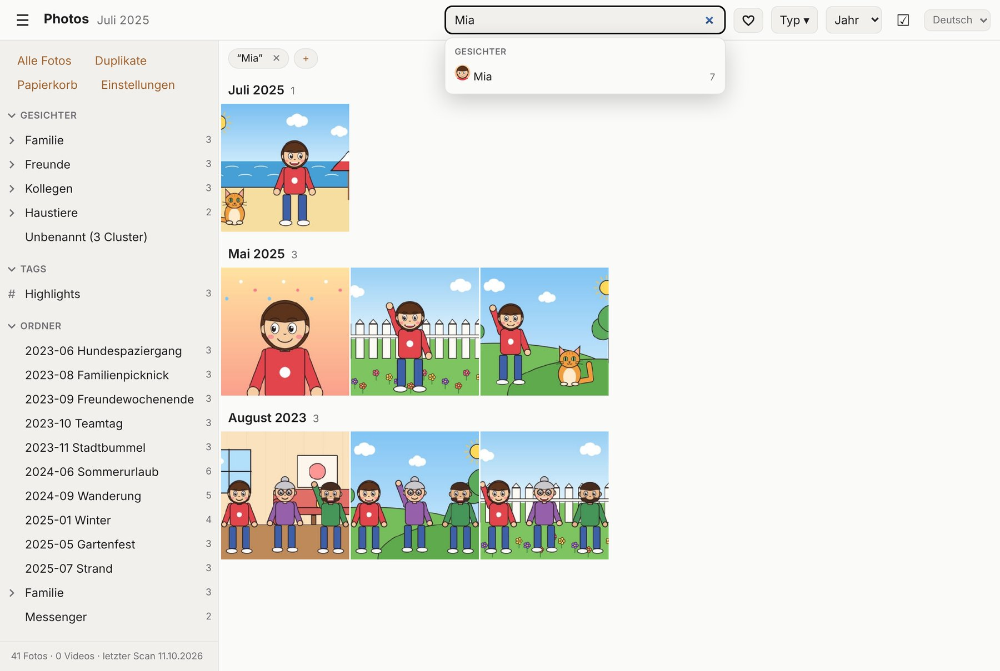
Wonach du suchen kannst
| Du tippst | Du bekommst | Gefunden wird |
|---|---|---|
Mia | 👤 Mia✕ | Eine Person oder ein Haustier. Namen funktionieren wie Tags, ebenso Arten wie „Katzen“. |
Urlaub | # Urlaub✕ | Fotos mit diesem Tag. Ein Ordnername steht unter Ordner; unter Tags stehen nur Tags, die du von Hand vergeben hast, auch solche mit dem Namen eines Ordners. |
Juni 1987 | Juni 1987✕ | Fotos aus diesem Jahr, Monat oder Tag. Siehe „Datum und Suche nach Datum“. |
text:Rechnung | Rechnung✕ | Wörter, die in Fotos stehen. Siehe „Wörter in Fotos“. |
name:IMG_20 | IMG_20✕ | Dateinamen. |
favorit | ♥ Favoriten✕ | Deine Favoriten. Der ♥-Knopf neben Typ tut dasselbe. Das lässt sich mit allem anderen kombinieren, zum Beispiel die Favoriten einer Person oder eines Jahres. |
Zuhause | 📍 Zuhause✕ | Fotos, die an einem benannten Ort entstanden sind (Karten an). Siehe „Orte und Karten“. |
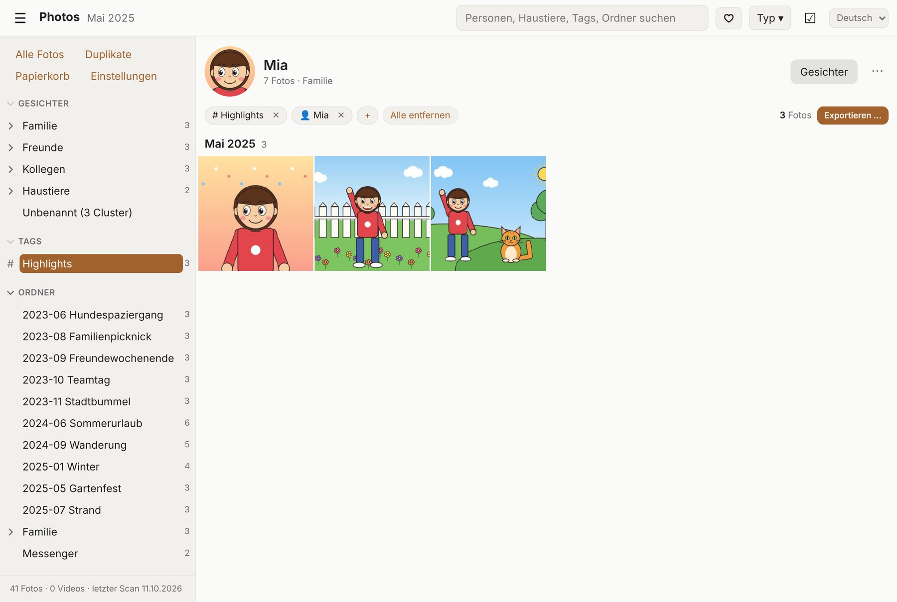
Typ: Fotos, Videos, Live Photos, Screenshots
Typ grenzt die Zeitleiste auf eine Art von Bildern ein. Hake beliebige an; ohne Haken wird alles gezeigt.
Jedes Bild gehört zu genau einem der vier, Fotos und Live Photos überschneiden sich also nie: Hake beide an, um alle deine Fotos zu sehen.
Was du anhakst
Was du anhakst, erscheint auch als Chip mit dem Symbol des Typs (vier Quadrate, wenn mehrere angehakt sind); sein × hebt den Filter auf, ebenso Alle entfernen. Um Screenshots aus der Zeitleiste zu nehmen, hake Fotos, Videos und Live Photos an, aber nicht Screenshots; um nur Screenshots zu sehen, hake nur Screenshots an.
Wenn shoebox falsch rät
Shoebox erkennt einen Screenshot an der Datei (ein PNG ohne Kameradaten, ein Name wie Screenshot oder Bildschirmfoto, die Größe eines Handy- oder Computerbildschirms) und am Bild selbst (große einfarbige Flächen). Es kann sich in beide Richtungen irren: Im Info-Fenster eines Fotos ist Screenshot ein Auswahlfeld, das mit der Schätzung von Shoebox beginnt; wähle Ja oder Nein zum Korrigieren, das Rückgängig-Symbol rechts in der Zeile (Tooltip Zurück zu automatisch) kehrt zur Schätzung zurück. Deine Wahl wird in der Bibliothek gemerkt; die Fotodatei wird nie verändert.
Auswählen
☑ drücken, dann Fotos anklicken (mit Umschalt für einen Bereich; am iPad einfach tippen). „Alle auswählen“ an einer Monatsüberschrift nimmt den ganzen Monat; Alle auswählen in der Leiste unten nimmt alle gezeigten Fotos über alle Monate (zum Beispiel alle Fotos eines Tags, um den Tag auf einmal zu entfernen).
Die Auswahl gehört zu der Liste, in der du sie getroffen hast: Ein Klick auf einen anderen Tag, Ordner oder eine andere Seite in der Seitenleiste oder eine Suche beendet sie; sind Fotos ausgewählt, fragt shoebox vorher nach, beim Klick auf die Seite oder ins Suchfeld (Bleiben oder Gehen und Auswahl verwerfen / Suchen und Auswahl verwerfen).
Die Leiste unten wirkt auf die Auswahl: Tag hinzufügen …, Datum setzen … (siehe „Datum und Suche nach Datum“), Verschieben … und Exportieren …, dazu der Papierkorb, wenn du ihn erlaubt hast.
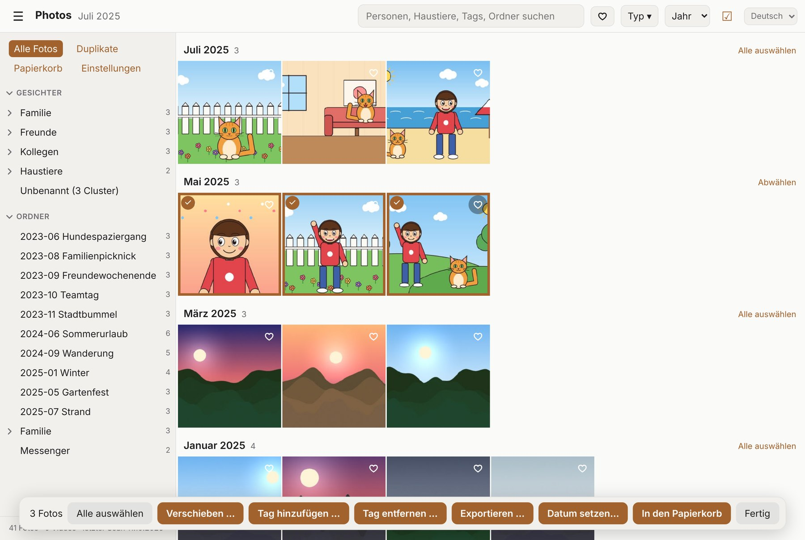
Taggen
Tag hinzufügen … gibt der Auswahl deinen eigenen Tag. Tags leben im Index von shoebox, nie in den Fotodateien. Im Tag-Feld stehen zuerst die Tags, die du zuletzt benutzt hast (Zuletzt verwendet), dann die Am häufigsten benutzten; beim Tippen wird die Liste enger, die zuletzt benutzten bleiben oben. Das merkt sich shoebox im Index des Laufwerks (nie in den Fotodateien), also auf jedem Computer und Tablet gleich.
Tags, die auch Ordnernamen sind
Ein Tag kann auch ein Ordnername sein (der Ordner „Justin“ gibt allen seinen Fotos den Tag „Justin“, und du hast ihn vielleicht anderen Fotos von Hand gegeben). Unter so einem Tag in der Seitenleiste erscheint, solange er gezeigt wird, eine Zeile Nur manuelle Tags mit der Zahl der Fotos, die du selbst getaggt hast; ein Klick darauf zeigt nur diese (der Tag steht dann in orangem Text, sein Chip sagt „manuell“). Ein Klick auf den Tag selbst zeigt wieder alle seine Fotos.
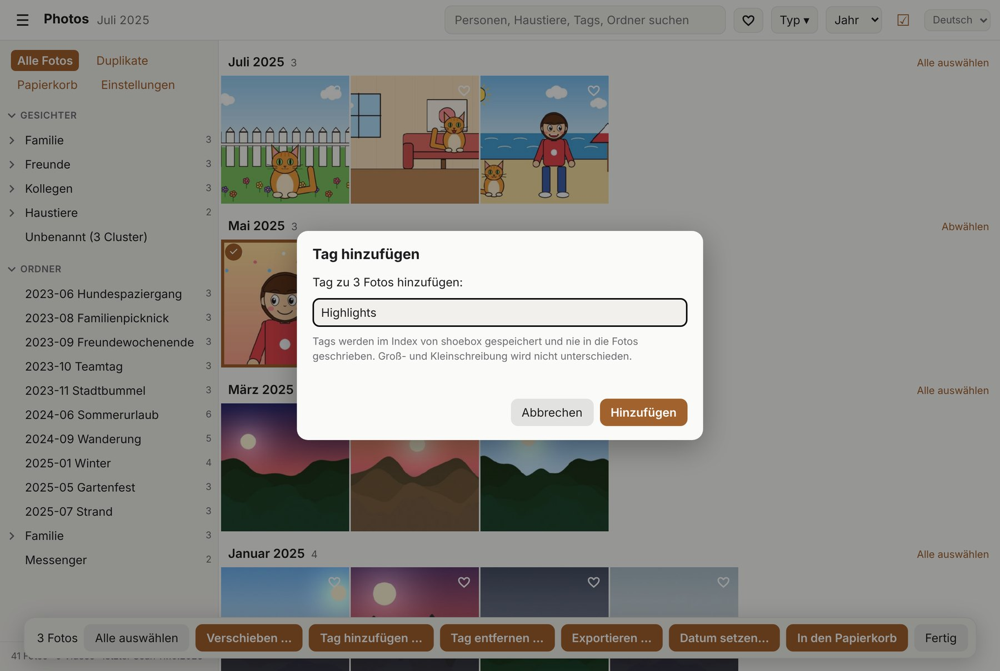
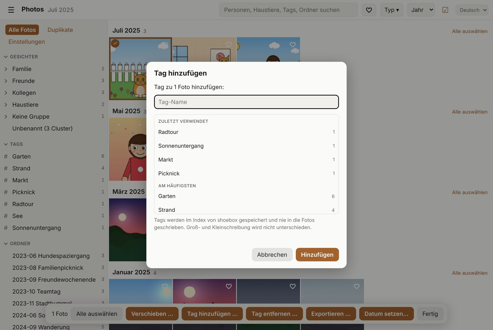
Sammeln: ein Schnell-Tag
Sammeln ist ein Schnell-Tag, um Fotos für etwas zusammenzutragen: eine Druckbestellung, ein Album in InDesign, ein Video zum Geburtstag. Unter Einstellungen → Sammlung trägst du den Namen dieses Tags ein, zum Beispiel druck-maerz.
In der Fotoansicht erscheint dann ein Lesezeichen-Knopf . Ein Klick, oder die Taste C, setzt den Tag auf das Foto, und das Lesezeichen wird ausgefüllt ; der nächste Klick nimmt den Tag wieder weg. Wenn du mit der Maus über den Knopf fährst, siehst du, welchen Tag er benutzt. Bleibt die Einstellung leer, ist der Knopf weg.
Du kannst über mehrere Sitzungen sammeln: Such nach dem Tag, um zu sehen, was du hast, und exportiere es dann (siehe unten).
Verschieben
Verschieben … fragt nach einem Ordner. Neue Ordner werden angelegt, nichts wird überschrieben, RAW-, Live-Photo- und Begleitdateien (Sidecar) wandern mit. Die eigenen Tags der Fotos gehen immer mit. „Ordnertags behalten“ behält zusätzlich die Tags des alten Ordners als eigene Tags; Ordner-Tags folgen immer dem neuen Ordner.
Ist ein Ordner nach dem Verschieben leer (nur das, was dein Computer dort selbst ablegt, etwa .DS_Store oder Thumbs.db, ist noch darin), entfernt shoebox diesen leeren Ordner und sagt dir, welcher es war. Ein Ordner, in dem noch etwas anderes liegt, auch ein Unterordner, bleibt.
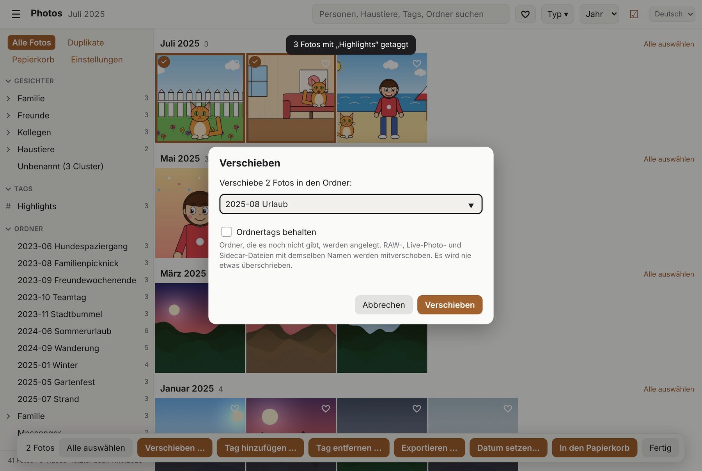
Exportieren
Drücke Exportieren …, um Fotos in einen Ordner deiner Wahl zu kopieren, zum Beispiel das Gesammelte: in der Leiste unten für die ausgewählten Fotos oder, wenn ein Tag in der Suche ist, neben seinem Chip für alles, was gezeigt wird. Der Dialog fragt, wohin gespeichert wird (Wählen … öffnet eine Liste deiner Ordner und Laufwerke; Downloads steht oben) und wie der neue Ordner heißen soll. Bei einem Tag ist das der Name des Tags, bei einer Auswahl tippst du einen.
Darin liegen Kopien mit Namen wie 001_IMG_3457.jpg, 002_… in der Reihenfolge der Aufnahmedaten (Einstellungen → Export schaltet die Nummern ab).
HEIC in JPEG umwandeln ist für Druckereien und Programme, die HEIC nicht lesen können; das JPEG behält Aufnahmedatum und Kameradaten. Haben Fotos eine RAW-Datei oder das Video eines Live Photos, nimmt ein Häkchen diese mit. Videos werden unverändert kopiert.
Erneut exportieren
Ein erneuter Export in denselben Ordner fügt nur Neues hinzu: Eine Datei, die schon da ist (gleicher Name ohne die Nummer, gleiche Größe), wird übersprungen, und die Nummern der übrigen werden auf die neue Reihenfolge angepasst. Im Ordner wird nie etwas gelöscht.
Wählst du ein Laufwerk, das eine eigene shoebox-Bibliothek hat, fragt shoebox vorher nach, denn der nächste Scan dieses Laufwerks findet die Kopien und nimmt sie als neue Fotos ohne ihre Tags auf.
Jedes Original wird mit derselben Kontrolle wie bei einem Scan gelesen und jede Kopie danach damit verglichen; die Originale werden nie verändert.
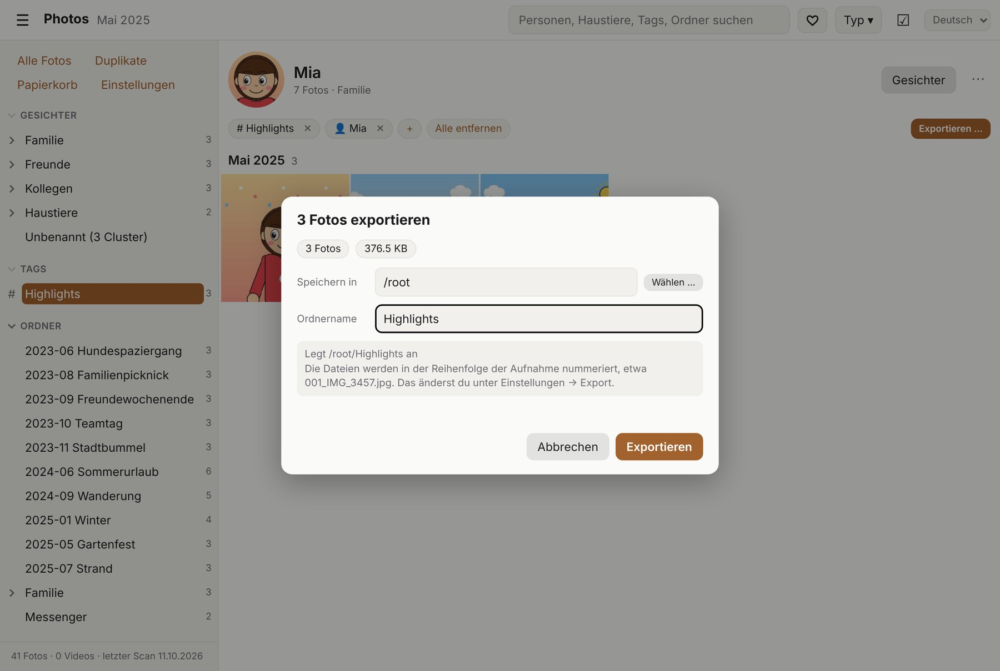
Datum und Suche nach Datum
Wo ein Foto in der Zeitleiste steht, wie du ihm ein eigenes Datum gibst und wie du Fotos nach Datum findest.
Welches Datum zählt
Die Zeitleiste, ihre Monatsgruppen, das Menü Jahr und die Suche benutzen ein Datum pro Foto: das erste der folgenden, das es gibt.
- Das Datum, das du dem Foto gegeben hast (ein Jahr, ein Monat oder ein Tag), falls du eines gesetzt hast. Es gilt sogar vor einem Aufnahmedatum in der Datei.
- Das Aufnahmedatum in der Datei (EXIF; bei einem Video das Datum im Video).
- Der Monat im Namen des Ereignisordners (
2020-07,2020.07,20-07oder20.07), angezeigt als der 1. dieses Monats. - Das frühere von Erstellungs- und Änderungsdatum der Datei (eine Kopie bekommt ein neues Erstellungsdatum, behält aber das alte Änderungsdatum).
Nur ein Aufnahmedatum in der Datei ist der Tag, an dem das Foto aufgenommen wurde. Jedes andere Datum ist in der Zeile Datum des Infofelds als geschätzt markiert; ein von dir gesetztes zeigt manuell, und der Stift daneben setzt oder ändert es (siehe unten). In ein Foto wird nie etwas geschrieben: deine Daten liegen im Index von shoebox auf dem Laufwerk.
Wo ein Foto landet
Ein Tag setzt das Foto auf diesen Tag. Mit nur einem Monat steht es in der Gruppe dieses Monats, nach den Fotos mit genauem Tag. Mit nur einem Jahr bekommt es eine eigene Gruppe, nach dem Jahr benannt, unter dem Januar dieses Jahres. Eine kleine ~ am Foto zeigt, dass sein Datum geschätzt ist; zeige darauf, um die Art zu sehen.
Einem Foto ein Datum geben
Foto öffnen, ⓘ drücken und dann den Stift am rechten Ende der Zeile Datum (Datum setzen, oder Ändern, wenn du schon eines gesetzt hast). Jahr ist nötig; Monat und Tag können auf Unbekannt bleiben. Die Tagesliste richtet sich nach dem Monat (der Februar hat 28 oder 29 Tage) und bleibt grau, bis ein Monat gewählt ist. Ein Datum in der Zukunft wird abgelehnt. Unter den Feldern zeigt eine Vorschau, wo das Foto stehen wird. Speichern behält es; Schätzung entfernen (nur da, wenn du ein Datum gesetzt hast) nimmt es wieder weg.
Das geht bei jedem Foto, auch bei einem mit Aufnahmedatum in der Datei: ein Scan oder ein Foto, das du von einem alten Abzug gemacht hast, trägt den Tag, an dem es entstand. Das Datum der Datei geht nicht verloren; das Infofeld zeigt es dann in einer Zeile EXIF, und wenn du dein Datum entfernst, gilt es wieder.
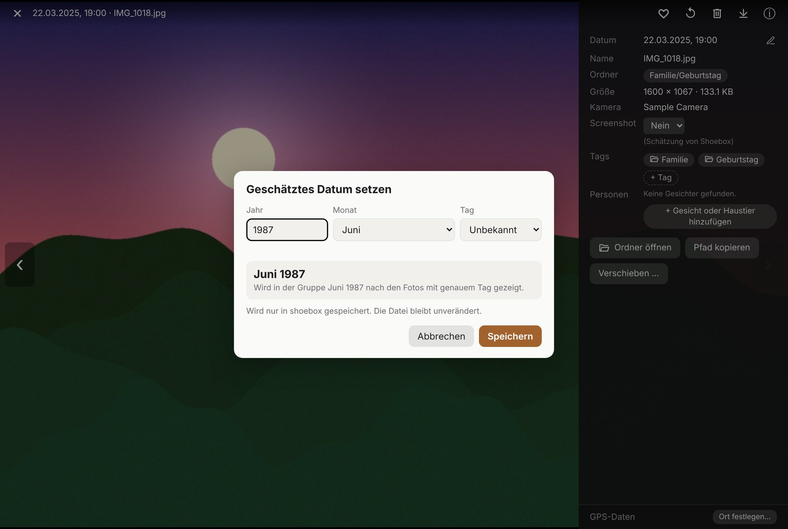
Viele Fotos auf einmal
☑ drücken, die Fotos wählen (ein ganzer Monat oder alle Fotos eines Ordners gehen auch) und Datum setzen … drücken. Haben einige schon ein Aufnahmedatum in der Datei, sagt der Dialog, wie viele; für sie gilt auf der Zeitleiste dein Datum. Danach erscheint eine Meldung mit Rückgängig.
Datum fehlt
Haben manche Fotos weder ein Aufnahmedatum in der Datei noch ein Datum von dir, erscheint neben Alle Fotos der Eintrag Datum fehlt. Er listet sie auf (der Chip über der Liste zeigt die Anzahl und einen Hinweis, dass die angezeigten Daten nur Schätzungen aus dem Ordner oder dem Erstell- bzw. Änderungsdatum der Datei sind), damit du Scans und weitergeleitete Bilder abarbeiten kannst; ein Foto verlässt die Liste, sobald es ein Datum hat.
Nach Datum suchen
Tippe ein Jahr (1987), einen Monat und ein Jahr (Juni 1987, june 1987, 6/1987, 1987-06) oder einen Tag (14.6.1987, 14 Juni 1987; Zahlen mit Punkt oder Schrägstrich sind Tag, Monat, Jahr) und wähle die Zeile unter Datum, der letzten Gruppe der Liste. Sie wird zu einem Chip mit Kalender und lässt sich mit den anderen Chips kombinieren, zum Beispiel eine Person und ein Jahr.
Ein Monat allein bietet nie ein Datum an, damit Juni weiter Tags und Personen namens Juni findet. Dafür tippst du datum: und den Monat, zum Beispiel datum:juni (auch date: geht): Die Liste zeigt dann nur Daten und führt diesen Monat in jedem Jahr deiner Bibliothek auf. datum: mit einem Jahr führt das Jahr und seine Monate auf.
Ein Foto wird gefunden, wenn sein Datum ganz in dem liegt, was du getippt hast. Ein Foto, das nur sein Jahr kennt, wird von 1987 gefunden, aber nicht von Juni 1987, denn es muss nicht aus dem Juni sein; ein Foto, das sein Datum aus dem Ereignisordner hat, kennt seinen Monat, nicht seinen Tag. Die Vorschläge zählen die Fotos jeweils eines Laufwerks.
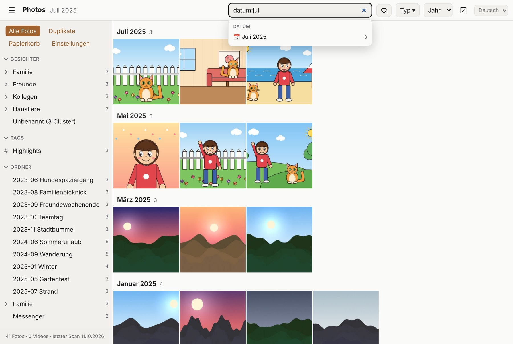
Einlesen, Duplikate und Papierkorb
Neue Fotos einlesen, Kopien aussortieren und was mit Gelöschtem passiert.
Neue Fotos einlesen
shoebox importiert keine Fotos. Die Fotos im Finder oder Explorer aufs Laufwerk kopieren oder verschieben (dabei bleiben ihre Daten erhalten), am besten in einen Ordner namens JJJJ-MM Ereignis, und Scannen drücken. Findet der Scan neue Dateien, die das Laufwerk schon hatte, markiert die Zentrale sie mit schon auf dem Laufwerk und bietet Die neuen Kopien löschen an (in den Papierkorb oder endgültig). Das ältere Original bleibt und bekommt den Ordnernamen der gelöschten Kopie als Tag. War die gelöschte Kopie das Einzige in ihrem Ordner, entfernt shoebox auch diesen leeren Ordner und nennt ihn. In den Einstellungen wählst du, wie Ereignisordner in Vorschlägen heißen (zum Beispiel JJ.MM_Ereignis); vorhandene Ordner werden nicht umbenannt, und alle Formen werden erkannt.
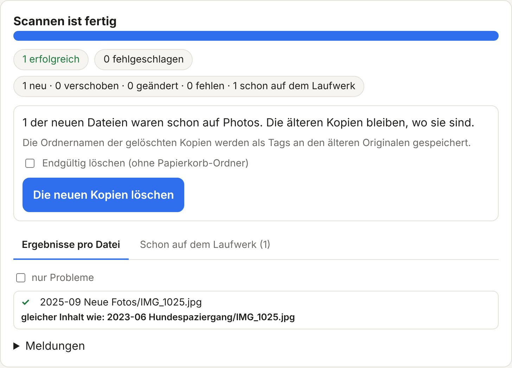
Duplikate
Duplikate zeigt vier Arten: identisch, dasselbe Foto mit anderen Pixelmaßen oder anderem Format (eine kleinere oder weitergeschickte Version, oder ein HEIC und das daraus gemachte JPEG), Original und bearbeitet sowie Ähnliche. Hake diese Kopie löschen bei dem an, was weg soll; die beste Datei bleibt.
shoebox hakt nur an, was sicher ist: identische Dateien und eine Version mit weniger Pixeln (ein HEIC und sein JPEG werden zusammen gezeigt, aber keins wird vorab angehakt).
Zwei Dateien im gleichen Format mit gleichen Pixelmaßen, aber verschiedenen Bytes, etwa ein Kamera-JPEG und ein aus der RAW-Datei entwickeltes JPEG (oft benannt wie IMG_1 2.jpg), werden nie vorab angehakt: sie erscheinen unter Ähnliche, und du wählst, welche bleibt (siehe Dieses behalten unten). Kleine Marken zeigen, welche Datei die meisten Pixel hat oder die größte Datei ist.
Tags und Aufnahmedatum einer entfernten Kopie gehen auf die übrige über. War die entfernte Kopie das Letzte in ihrem Ordner, entfernt shoebox den leeren Ordner und sagt dir, welcher es war.
Bei mehr als einem Laufwerk zeigt der Reiter Über Laufwerke hinweg (in Alle Laufwerke und unter Laufwerke verwalten) Fotos, die auf mehreren Laufwerken liegen: ein Bild, eine Zeile pro Kopie mit Name des Datenträgers und Ordner. Hake die Kopien an, die weg sollen, oder wähle ein Laufwerk und Alle markieren, um jede Kopie darauf anzuhaken; die letzte Kopie eines Fotos lässt sich nie anhaken. In den Papierkorb fragt vorher nach und legt jede Kopie in den Papierkorb ihres eigenen Laufwerks.
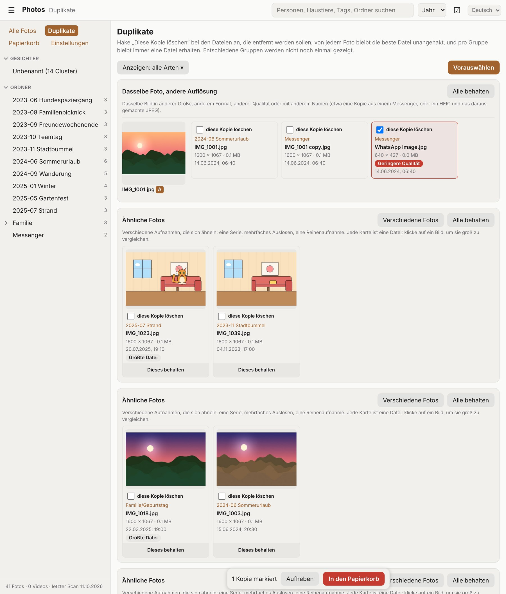
Vorauswählen
Vorauswählen (oben rechts) hakt diese Kopie löschen nach einer Regel an und bringt die angehakten Gruppen nach oben, damit du genau siehst, was markiert ist. Entfernt wird erst, wenn du In den Papierkorb drückst und bestätigst. Jede Zeile zeigt, wie viele Dateien sie anhaken würde, und ihr Tooltip sagt, was sie tut; eine Zeile ohne Treffer wird nicht aufgeführt.
- Vorschlag: nur was shoebox sicher weiß: von identischen Dateien alle außer der besten, und kleinere Versionen eines Fotos. Das ist auch angehakt, wenn die Seite aufgeht.
- Identische Fotos: Kopien im selben Ordner (IMG_1 (2) neben IMG_1; identische Dateien in anderen Ordnern bleiben).
- Dasselbe Foto, andere Auflösung: Kleinere Versionen (jede Karte mit rotem Schild Geringere Qualität, auch in Gruppen Ähnlicher), HEIC behalten (hakt das JPEG an) und JPEG behalten (hakt das HEIC an).
- Original und bearbeitet: Bearbeitete Versionen (die Originale bleiben) und Originale (die Bearbeitungen bleiben).
- Ähnliche Fotos: Größere Datei behalten hakt in jeder Gruppe alle anderen an, und Letzte Aufnahme behalten behält die zuletzt aufgenommene (Gruppen ohne Aufnahmedatum werden übersprungen). Ähnliche können verschiedene Aufnahmen sein: sieh die Gruppen vorher durch.
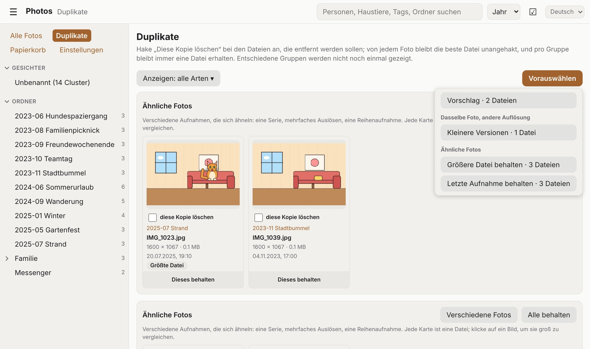
Was du bei Duplikaten tun kannst
| Aktion | Bedeutung |
|---|---|
| Alle behalten | Nichts wird gelöscht. Diese Dateien gehören zusammen; sie erscheinen als Versionen bei jedem Foto. Schaltfläche oben rechts. |
| Verschiedene Fotos | Nichts wird gelöscht. Ähnliche Fotos sind getrennte Aufnahmen, keine Kopien. Schaltfläche oben rechts. |
| Diese Kopie löschen | Die Kopie kommt in den Papierkorb. Bei jeder Kopie anhaken, die weg soll; die beste Datei bleibt. |
| Dieses behalten | Hakt alle anderen an. Nur bei ähnlichen Fotos: der Knopf am Fuß einer Karte hakt diese Kopie löschen bei allen anderen Dateien der Gruppe mit einem Klick an. Der gleiche Knopf im Vergleichsfenster (Bild anklicken) hakt die anderen an und schließt das Fenster. Um mehrere zu behalten, drücke unter jedem Foto, das bleiben soll, Behalten (der Knopf mit dem Häkchen) und dann unten Behalten (2), oder so viele du markiert hast: das Fenster schließt, und alle anderen Fotos der Gruppe sind angehakt. Im Fenster wird nichts verschoben; geh deine Gruppen durch und drücke dann einmal In den Papierkorb in der Leiste unten auf der Seite. |
Alle behalten und Verschiedene Fotos sind interne Notizen: shoebox speichert sie in seiner eigenen Datenbank in .shoebox auf dem Laufwerk, nie in den Fotos. Diese Funde zeigt dir shoebox auf dem Bildschirm Duplikate nicht mehr an. Die Notizen bleiben erhalten, wenn du Fotos verschiebst oder umbenennst.
Papierkorb
Nichts wird sofort gelöscht. Gelöschte Fotos warten in .shoebox/trash auf dem Laufwerk. Klicke Fotos an, um sie auszuwählen (Umschalt-Klick wählt einen Bereich), oder nimm Alle auswählen; die Leiste unten bietet dann Zurücklegen und Endgültig löschen. Endgültig löschen fragt vorher nach. Das Legen in den Papierkorb in der Zeitleiste und in der Fotoansicht ist standardmäßig aus: Schalte es einmal in den Einstellungen ein (In den Papierkorb legen erlauben). Bleibt dabei ein Ordner leer, entfernt shoebox ihn und sagt dir, welcher es war; Zurücklegen legt den Ordner wieder an. Das Löschen von Kopien bei den Duplikaten und mit Die neuen Kopien löschen funktioniert in jedem Fall und geht ebenfalls in den Papierkorb.
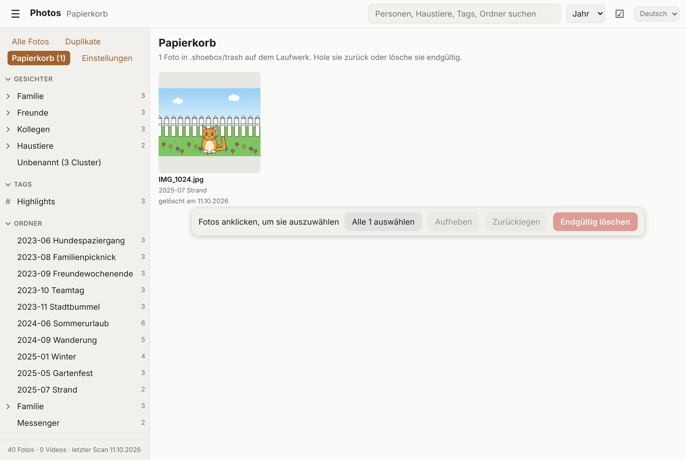
Personen und Haustiere
Optional: shoebox findet Gesichter, Katzen und Hunde; du vergibst die Namen.
Finden
Installiere die Erweiterungen einmal in der Zentrale (siehe „In drei Schritten loslegen“): Gesichter, und Haustiere für Katzen und Hunde. Dann führst du in der Zentrale Gesichter erkennen (und Haustiere erkennen) aus. In der Seitenleiste erscheint ein Bereich Gesichter; „Gesichter taggen, Schritt für Schritt“ zeigt, wie du sie benennst.
Neue Fotos
Die Erkennung startet nach einem Scan noch nicht von selbst. In der Zentrale einfach erneut Gesichter erkennen anklicken; die Foto-App kann offen bleiben. Die Gesichtserkennung läuft nur auf den neuen Fotos.
Gefundenes vergessen
Einstellungen → Daten aufräumen hat je eine Karte für erkannten Text, Gesichter und Haustiere; die Karten für Gesichter und Haustiere haben zwei Knöpfe. Automatische Funde löschen entfernt die Gesichter (oder Katzen und Hunde), die die Erkennung gefunden hat, vom Laufwerk. Deine Namen, Bestätigungen und gezeichneten Rahmen bleiben und bestätigte Gesichter bleiben auf ihren Fotos und bei ihrer Person, markiert als nicht im Abgleich. Bis die Fotos erneut erkannt wurden, ist Unbenannt leer, und es wird nichts vorgeschlagen.
Alles löschen, auch Namen entfernt auch, was du getan hast: die benannten Personen, bestätigte und abgelehnte Gesichter, „kein Gesicht“ und gezeichnete Rahmen. Das lässt sich nicht rückgängig machen, weil in den Fotos nichts davon steht; ein Dialog sagt vorher, wie viele es sind. Deine Fotos werden nie angefasst.
Gesichter taggen, Schritt für Schritt
Nach dem Erkennen wartet jedes Gesicht auf einen Namen. Du musst nicht alle benennen.
-
Unbenannt öffnen
In der Seitenleiste Gesichter und dann Unbenannt öffnen. Jede Karte enthält Gesichter, die sich ähneln, die Karte mit den meisten Treffern zuerst. Katzen und Hunde haben eigene Karten; das Menü über den Karten wählt Personen, Haustiere oder beides. Ein Klick auf ein Gesicht zeigt sein Foto; mit den Pfeiltasten links und rechts blätterst du durch die Fotos der Karte, Leertaste oder Esc schließt die Ansicht. Der Schieberegler rechts neben dem Menü stellt die Größe der Gesichtskreise ein, von 64 bis 150 Pixel; shoebox merkt sie sich in diesem Browser. Größere Kreise machen die Karten höher, daher passen weniger auf den Bildschirm.
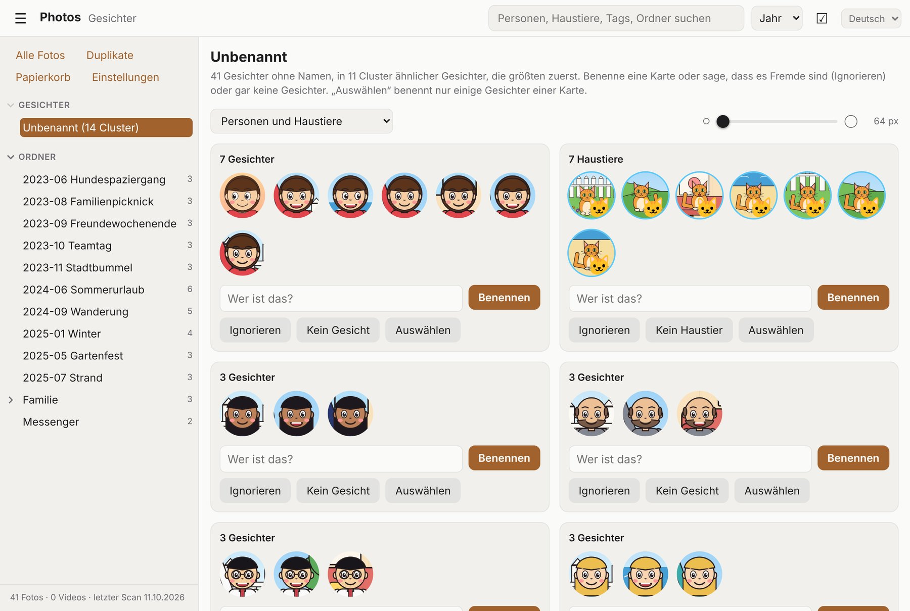
Unbenannt: eine Karte für jede Gruppe ähnlicher Gesichter, mit Ignorieren und Kein Gesicht. -
Eine Karte benennen
Den Namen einmal eintippen und Benennen drücken: Die ganze Karte ist benannt. Ein Klick ins Feld zeigt zuerst die zuletzt benannten Personen (Zuletzt verwendet) und die mit den meisten Fotos, dann alle nach Gruppe; beim Tippen erscheinen Personen, die es schon gibt (bei Tieren nur Katzen und Hunde, und umgekehrt); sonst + Neue Person wählen (bei Tieren steht dort + Neue Katze, + Neuer Hund oder + Neues Tier). Danach schlägt shoebox weitere Gesichter vor (Sieht aus wie Mia): mit ✓ bestätigen oder mit ✗ ablehnen.
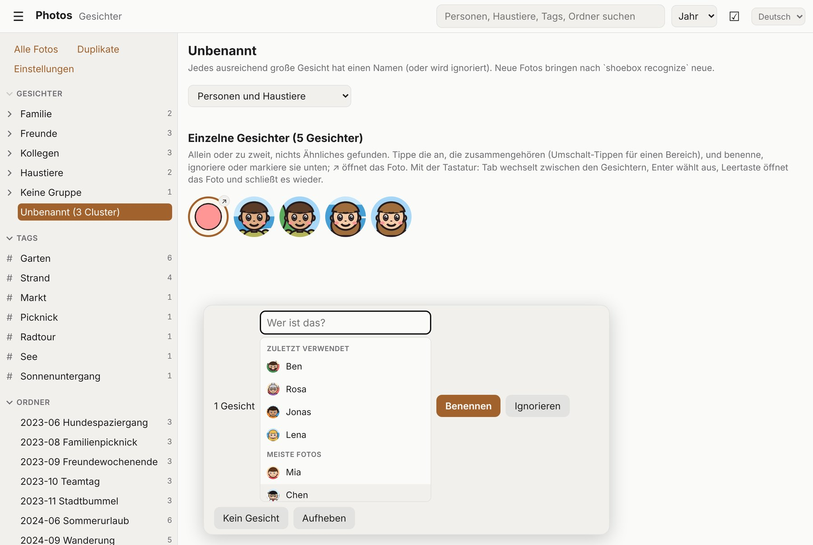
Gesichter benennen: zuerst die zuletzt Benannten, dann die mit den meisten Fotos, dann alle nach Gruppe. Die Liste öffnet sich nach oben über der Seite. -
Fremde und Fehlerkennungen
Ignorieren ist für Fremde und für Gesichter auf Postern, Bildschirmen und Bildern: Niemand muss sie benennen. Kein Gesicht (bei Haustieren Kein Haustier) ist für Fehlerkennungen, die gar kein Gesicht sind. shoebox findet nur Katzen und Hunde; ein Tier anderer Art (etwa eine Ziege) ist ein Fehlfund: Kein Haustier. Eine Katze oder ein Hund, der jemand anderem gehört, ist ein Fremder: Ignorieren (im Menü ⋯ steht Ignorieren (Fremdes Haustier)). Nichts wird gelöscht und kein Foto angefasst; shoebox merkt sich die Entscheidung nur in seiner eigenen Datenbank.
Manchmal hält die Erkennung eine Katze für einen Hund oder umgekehrt, und dann werden nur Namen der falschen Art angeboten. Das Tier oder die Tiere anhaken (Auswählen) und Ist eine Katze, kein Hund (oder Ist ein Hund, keine Katze) drücken, oder denselben Eintrag unter ⋯ am Tier im Infofeld eines Fotos wählen. Das Tier behält die bisherigen Entscheidungen und ist ab dann in der Namensliste, am Symbol und in der Suche eine Katze.
-
Nur einige Gesichter einer Karte
Auswählen lässt dich die Gesichter selbst anhaken. Die Knöpfe gelten dann nur für diese: 2 benennen, 2 ignorieren, 2 kein Gesicht. Praktisch, wenn eine Karte zwei Personen mischt. Solange es an ist, heißt der Knopf Aufheben; damit beendest du das Auswählen und hebst die Auswahl auf.
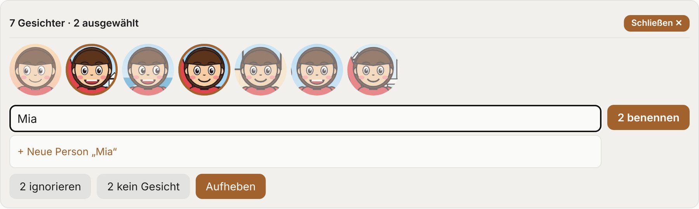
Auswählen: zwei Gesichter einer Karte angehakt.
Mehrere Gesichter in einem Foto, und Gruppen
Gesichter in der Ansicht anhaken. Personen in Gruppen wie Familie, Freunde und Kollegen sortieren.
In einem Foto
Ein Foto und sein Infofeld (ⓘ) öffnen. Unter Gesichter hat jedes Gesicht sein Bild und einen Namen oder + Name. Unter der Liste stehen drei kleine Symbolknöpfe (darauf zeigen zeigt den Namen): der Rahmen mit Auge (Rahmen anzeigen), das Kästchen (Auswählen, nur sichtbar, solange mindestens zwei Gesichter noch nicht bestätigt sind) und das Gesicht mit Plus (Gesicht oder Haustier hinzufügen).
Auswählen macht die Liste zu einer Checkliste: mehrere Gesichter anhaken (Alle ohne Namen hakt jedes Gesicht an, das niemand benannt hat), dann Ignorieren oder Kein Gesicht für alle auf einmal.
Gesicht oder Haustier hinzufügen zeichnet einen Rahmen um ein übersehenes Gesicht oder Tier. Zuerst sagen, was es ist, Person, Katze oder Hund, dann benennen: Die Liste zeigt nur Namen dieser Art (keine Personen, wenn du eine Katze benennst), und + Neue Person, + Neue Katze oder + Neuer Hund legt eine neue an. Die Art eines selbst gezeichneten Tiers lässt sich später nicht ändern; den Rahmen löschen und neu zeichnen. Bei einem Tier, das die Erkennung gefunden hat, bietet ⋯ Ist eine Katze, kein Hund (oder umgekehrt) an, wenn sie es für das falsche gehalten hat.
Videos werden nicht nach Gesichtern durchsucht; ihr Infofeld sagt das. Eine Person kannst du trotzdem verknüpfen: Derselbe Knopf + Gesicht oder Haustier hinzufügen öffnet denselben Dialog (Person, Katze oder Hund, dann der Name); es gibt keinen Rahmen zu ziehen, den kleinen Rahmen setzt shoebox selbst, und auf dem Video wird nichts gezeichnet. Die Person oder das Haustier gehört zum ganzen Clip. Ihr Profilbild erscheint in der Liste, und das Video wird gefunden, wenn du die Zeitleiste nach dieser Person filterst.
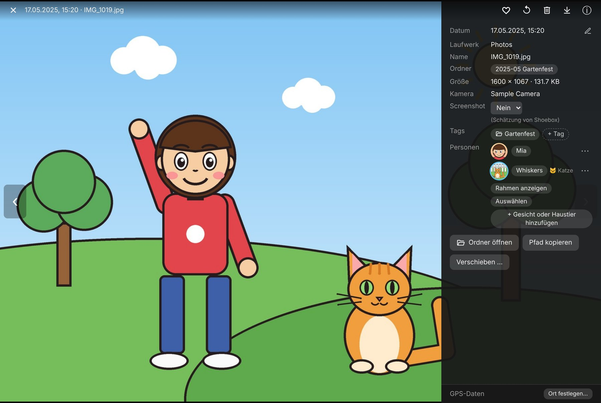
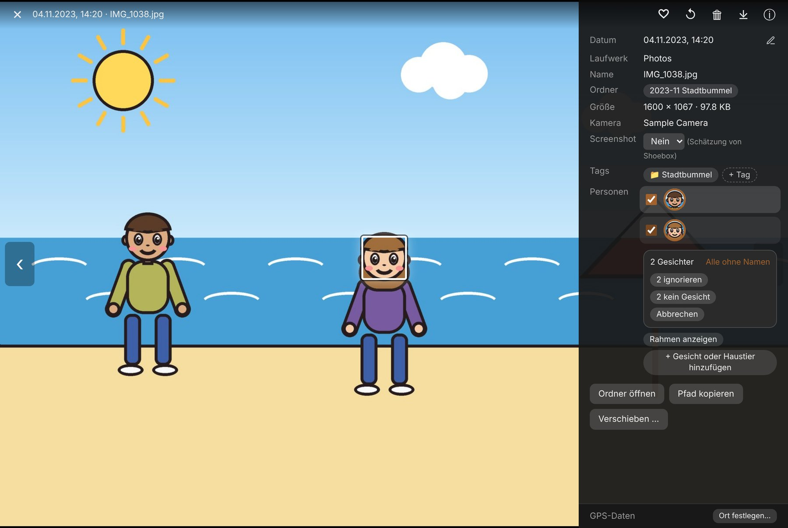
Gruppen
Gesichter zeigt die Personen nach Gruppen. Neue Gruppe … legt eine an; Gruppen … benennt Gruppen um, ordnet sie und löscht sie; zum Ordnen ziehst du eine Zeile am Punktegriff links (oder fokussierst den Griff und drückst Alt+↑/↓). Eine Person ist höchstens in einer Gruppe, und das Löschen einer Gruppe löscht niemanden.
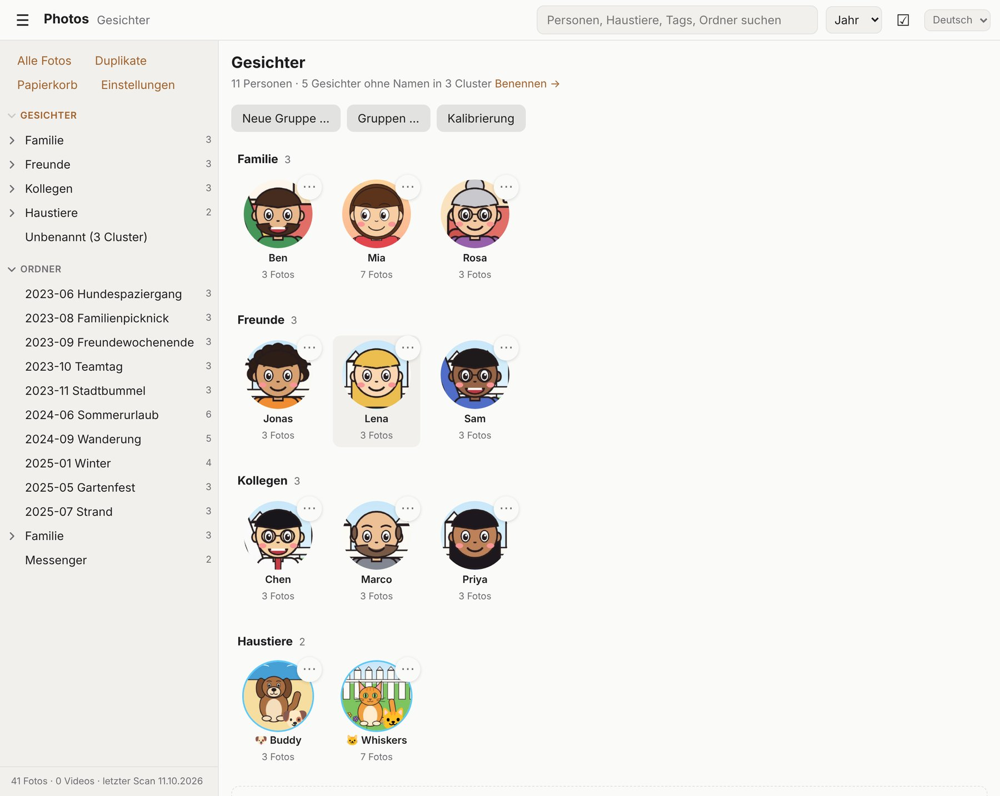
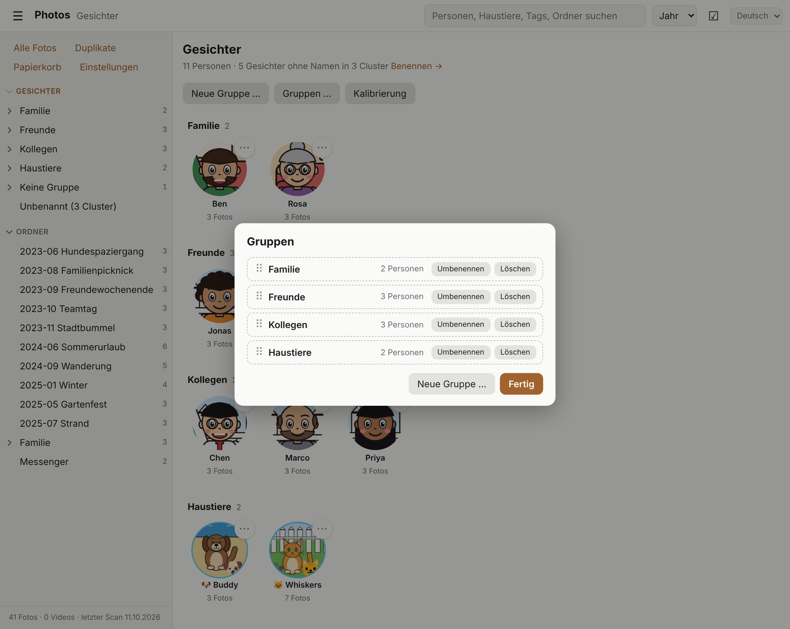
Personen in Gruppen legen
Bei einer Person auf ⋯ klicken und In Gruppe verschieben … wählen, oder die Person in der Seitenleiste auf eine Gruppe ziehen. Haustiere funktionieren genauso: Eine Gruppe Haustiere kann den Hund und die Katze enthalten.
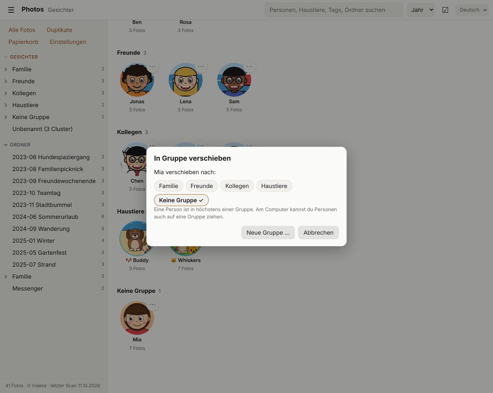
Korrekturen
Im selben ⋯-Menü steht Zusammenführen mit … für zwei Karten derselben Person. Auf der Seite einer Person listet Gesichter prüfen Bestätigt, Vorgeschlagen, Vielleicht und Nicht sie, und ein versehentlich markiertes Gesicht kommt mit ↺ zurück. Bei Vorgeschlagen und Vielleicht zeigt ein Klick auf ein Gesicht sein Foto; mit den Pfeiltasten blätterst du dann durch die Gesichter, die noch zu prüfen sind. Kalibrierung (Gesichts- und Haustier-Prüfung) zeigt, was die Erkennung gefunden hat: kleine Gesichter, Werte und Fehlfunde.
Alle behalten und Verschiedene Fotos sind interne Notizen: shoebox speichert sie in seiner eigenen Datenbank in .shoebox auf dem Laufwerk, nie in den Fotos. Diese Funde zeigt dir shoebox auf dem Bildschirm Duplikate nicht mehr an. Die Notizen bleiben erhalten, wenn du Fotos verschiebst oder umbenennst, Zu den Knöpfen zeigt ein Tooltip eine kurze Erklärung: Verschiedene Fotos sagt, dass die Dateien getrennte Aufnahmen sind, Alle behalten verknüpft sie als Versionen eines Fotos.
Orte und Karten
Optional: wo deine Fotos aufgenommen wurden, auf einer Karte. Aus, bis du es einschaltest.
Karten einschalten
Öffne die Einstellungen und setze den Haken bei Karten anzeigen (OpenStreetMap). Die Karten werden in deinem Browser aus OpenStreetMap gezeichnet; das ist die einzige Stelle, an der shoebox das Internet braucht: OpenStreetMap sieht, welche Kartenausschnitte du ansiehst, nie deine Fotos oder deren Namen. shoebox speichert keine Kartenbilder auf dem Laufwerk (dein Browser behält vielleicht welche in seinem eigenen Cache). Ohne Haken wird nie etwas aus dem Internet geladen. Die Einstellung gilt für alle Laufwerke: Du setzt sie einmal, und sie bleibt an, wenn du das Laufwerk wechselst. Dein Browser merkt sie sich; ein anderer Browser startet mit ausgeschalteten Karten.
In den Infos eines Fotos
Hat die Datei GPS-Daten, zeigt GPS-Daten im Infofeld die Position und, bei eingeschalteten Karten, eine kleine quadratische Karte mit einer Markierung, unten am Rand des Infofelds festgehalten. Ohne Internet steht dort stattdessen Offline. Ein Foto ohne GPS-Daten zeigt gar keine Karte, nur die Überschrift mit dem Knopf Ort festlegen….
Einem Foto einen Ort geben
Ort festlegen… (gleich rechts neben der Überschrift GPS-Daten) öffnet einen Dialog mit einer Karte und zwei Feldern, Breitengrad und Längengrad. Beides ist immer da und hängt zusammen: Klicke auf die Karte, um die Markierung zu setzen, oder tippe die Zahlen ein (Punkt oder Komma, Breitengrad −90 bis 90, Längengrad −180 bis 180, alles andere wird abgelehnt). Bei ausgeschalteten Karten funktionieren nur die Felder. Der Ort wird nur in shoebox gespeichert: Die Fotodatei bleibt unverändert, und er bleibt beim Foto, wenn du es verschiebst. Einen selbst festgelegten Ort kannst du wieder ändern oder entfernen; ein Ort, der in der Datei selbst steht, wird nie geändert.
Die Seite „Orte“
Bei eingeschalteten Karten erscheint Orte in der Seitenleiste unter den Ordnern. Sie öffnet eine Weltkarte mit einer Markierung für jedes Foto mit Ort; dicht beieinander liegende werden zu einer Zahl zusammengefasst und teilen sich beim Hineinzoomen auf. Klicke eine Markierung oder eine Gruppe an, dann teilt sich der Bildschirm: links die Karte, rechts die Fotos von dort, wie in der Zeitleiste. Ein Klick auf ein Foto öffnet es; der Pfeil oben in der Liste klappt sie ein.
Orte (Bereiche)
Ein Ort ist ein benannter Bereich, etwa „Zuhause“ oder „Insel XY“. Drücke Neuer Ort, klicke zwei gegenüberliegende Ecken auf der Karte an und gib einen Namen ein: Jedes Foto mit einem Ort innerhalb des Bereichs gehört dazu, jetzt und später. Die Orte stehen mit ihrer Fotozahl unter Orte in der Seitenleiste; ein Klick zeigt ihre Fotos.
Du kannst auch nach dem Namen eines Orts suchen. Ist die Suche leer, öffnet die Auswahl den Ort auf der Karte, wie ein Klick in der Seitenleiste (ein Typ-Filter fällt dabei weg, wie bei jedem Klick in der Seitenleiste). Hat die Suche schon Chips (Ordner, Tag, Person, Haustier, Favoriten ♥), kommt der Ort als Chip 📍 dazu und du bleibst in der Zeitleiste: Alle Chips müssen passen, „Zuhause“ + „Anna“ zeigt also Annas Fotos von zu Hause. Ein zweiter Ort ersetzt den ersten. Das 🗺 am Chip zeigt den Ort auf der Karte, und ein auf der Karte gewählter Ort geht mit, wenn du einen weiteren Chip hinzufügst.
In der Liste rechts kannst du einen Ort Umbenennen, den Bereich neu zeichnen oder ihn löschen; es verschwindet nur der Ort, nie ein Foto oder dessen Ort.
Orte und die von dir festgelegten Aufnahmeorte stehen zusammen mit deinen Tags und Personen in userdata.json neben dem Index auf dem Laufwerk.
Wörter in Fotos
Optional: Fotos über die Wörter finden, die darin stehen, etwa ein Brief, ein Screenshot oder ein Straßenschild. Braucht die Erweiterung „Text“.
Die Wörter lesen
In der Zentrale in Schritt 1 Text anhaken, Ausgewählte Erweiterungen installieren drücken, dann dein Laufwerk wählen und Text erkennen drücken (siehe „In drei Schritten loslegen“). Es liest deutsche und englische Buchstaben, liest nur (kein Foto wird verändert) und ist langsam, etwa eine Sekunde pro Foto auf einem neueren Computer (50.000 Fotos brauchen einen halben Tag, ein älterer Mac ein bis zwei Tage): am besten abends starten.
Es liest zuerst Screenshots und Fotos ohne Kameradaten, weil dort die meisten Texte stehen, und macht nach einem Abbruch dort weiter, wo es aufgehört hat. Nach einem Scan drückst du es noch einmal, um die neuen Fotos zu lesen.
Die Statuszeile unten in der Foto-App sagt Text: N noch zu lesen, solange Fotos warten. Erkennungsstatistik in der Zentrale zeigt, wie weit Gesichter, Haustiere und Text sind (im Terminal: shoebox stats).
Die Wörter suchen
Tippe ein Wort ins Suchfeld und wähle in den Vorschlägen die Gruppe Erkannter Text, oder tippe zuerst text: (text:Rechnung), um nur dort zu suchen. Es wird ein Chip mit Scanner-Symbol, und die gezeigten Fotos tragen ein kleines Schild mit der Zeile, die gepasst hat (zeig darauf, um die ganze Zeile zu lesen).
Groß- und Kleinschreibung, Akzente und ß spielen keine Rolle (strasse findet Straße); bei mehreren Wörtern müssen alle im selben Foto stehen. Er lässt sich mit allen anderen Chips verbinden, zum Beispiel der Text Rechnung in einem Jahr oder von einer Person, und er funktioniert in Alle Laufwerke. Dateinamen suchst du mit name:, siehe „Finden und ordnen“.
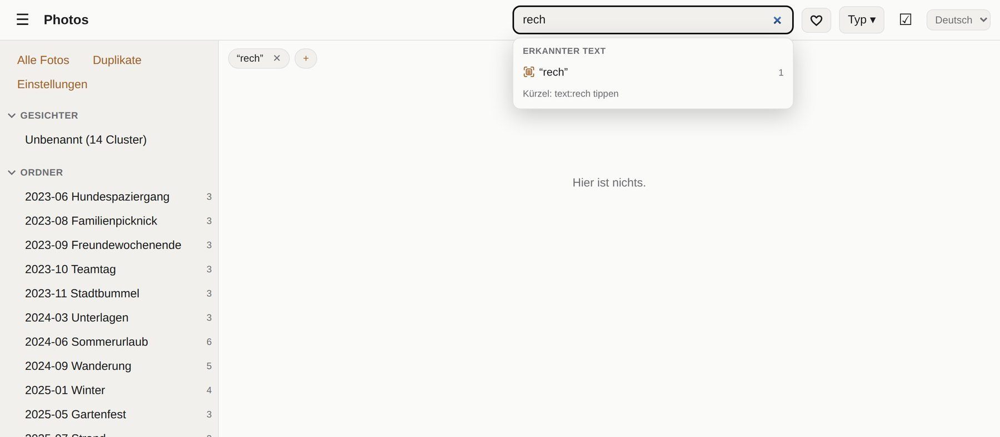
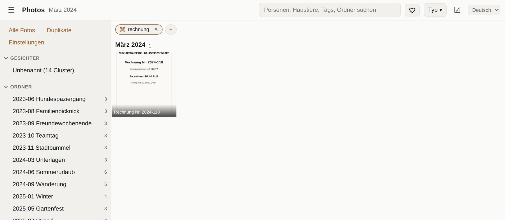
Nur, was sich das Programm sicher ist
Lesen ist nicht perfekt, und winzige Schrift wird mit Absicht weggelassen. Einstellungen → Kalibrierung → Text-Prüfung zeigt, was zählt und was weggelassen wird, mit dem ausgeschnittenen Teil des Fotos neben jeder Zeile; zwei Regler (Sicherheit mindestens, Höhe mindestens) verschieben die Grenzen, und Zurück zu den Standardwerten setzt sie zurück.
In der Ansicht
Bei einem Foto mit erkanntem Text erscheint in der oberen Leiste neben dem ♥ ein Scanner-Knopf, abgedunkelt; Fotos ohne Text zeigen ihn nicht. Drück ihn oder die Taste t: Die Zeilen werden auf dem Foto umrandet, und im Infofeld öffnet sich der Abschnitt Erkannter Text, eine Liste, die scrollt, wenn es viele Zeilen sind, mit Alles kopieren am rechten Ende der Kopfzeile. Drückst du den Knopf erneut, verschwinden die Umrandungen und die Liste klappt zu; ein Klick auf die Kopfzeile klappt nur die Liste auf oder zu. Nach einer Textsuche sind die Umrandungen von selbst an, und die gesuchten Wörter sind markiert. Das ✕ neben einer Zeile nimmt sie aus der Suche (für Text, der nicht gefunden werden soll); Wieder zeigen holt sie zurück.
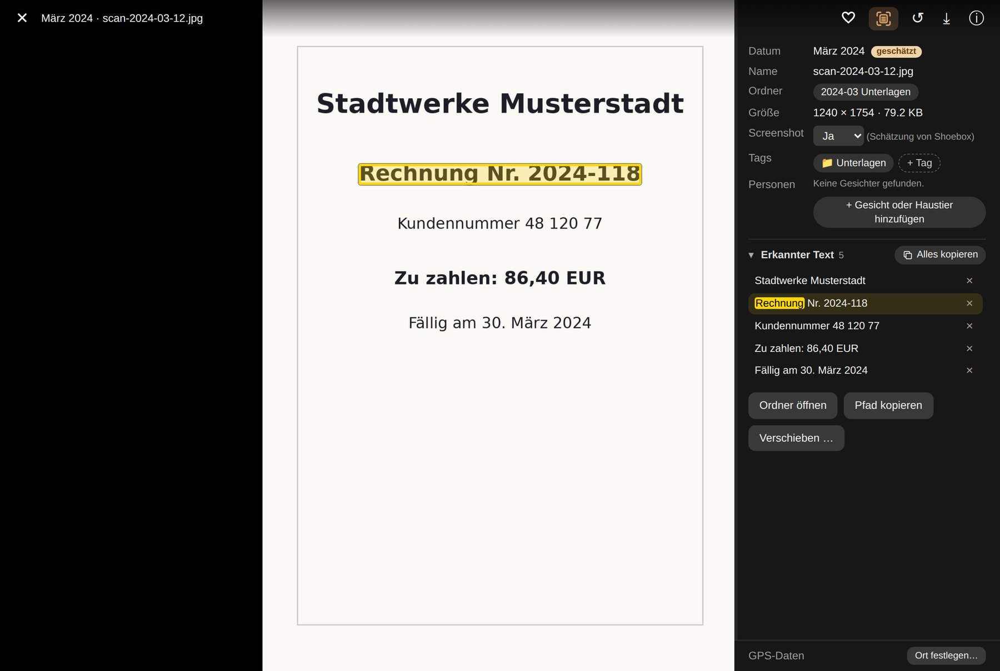
Den Text vergessen
Dokumente können Namen und Nummern enthalten. Einstellungen → Daten aufräumen → Erkannter Text → Gesamten erkannten Text löschen entfernt jedes gelesene Wort von diesem Laufwerk. Fotos bleiben unberührt, ausgeblendete Zeilen bleiben ausgeblendet, und Text erkennen liest sie auf Wunsch erneut. Im Terminal gibt shoebox text stats aus, wie viele Fotos gelesen wurden und wie viele Zeilen gespeichert sind (--json für Skripte).
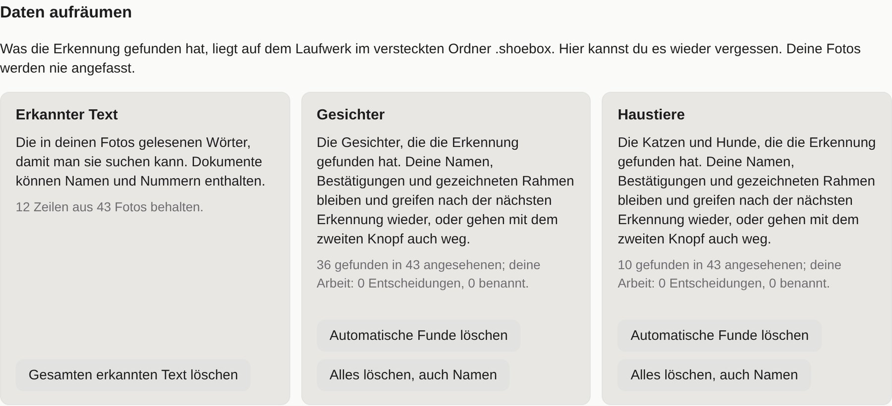
Laufwerke, Backups und das iPad
Mehrere Laufwerke
shoebox mit mehr als einem Laufwerk starten, und jedes erscheint in der Seitenleiste. Alle Laufwerke zeigt eine gemeinsame Zeitleiste über alle. Sie ist zum Ansehen da: Favoriten zeigen ein ♥ (ausgegraut, nicht anklickbar), und die Infoleiste zeigt Tags, Favorit und Personen, ohne dass sich dort etwas ändern lässt (Rahmen anzeigen und das Zeigen auf eine Person, um ihr Gesicht zu sehen, funktionieren weiterhin). Die Leiste nennt das Laufwerk, auf dem das Foto liegt (den Namen des Datenträgers, wie in Laufwerke verwalten), und bietet Im Finder zeigen (unter Windows Im Explorer zeigen) und Pfad kopieren; In der Zeitleiste von <Laufwerk> öffnen wechselt zur eigenen Zeitleiste dieses Laufwerks, im Ordner des Fotos, um Tags, Personen oder Favoriten zu ändern.
Laufwerke verwalten, neben Duplikate, Papierkorb und Einstellungen, öffnet eine Seite, die nicht vom angesehenen Laufwerk abhängt: deine Laufwerke als Karten und darunter zwei Reiter, Personen über Laufwerke hinweg und Duplikate über Laufwerke hinweg. Ein abgestecktes Laufwerk steht als offline da.
Unter Personen über Laufwerke hinweg steht bei jeder Person, auf welchen Laufwerken sie vorkommt: mit dem Namen des Datenträgers und der Zahl der dort gefundenen Gesichter (der Ordner erscheint beim Darüberfahren), und wer auf den meisten Laufwerken ist, steht ganz vorn. Das Laufwerk, das du gerade ansiehst, ist in der Akzentfarbe ausgefüllt, ebenso die Seite darunter (Alle Fotos, Duplikate, Papierkorb, Einstellungen); so siehst du immer, welcher Papierkorb von welchem Laufwerk offen ist.
Original- und Backup-Laufwerke
Auf der Seite Laufwerke verwalten ist jedes Laufwerk eine Karte mit dem Namen der Festplatte und dem Ordner darauf (zum Beispiel Extreme SSD · /Photos). Mit dem Menü in der Karte sagst du, was das Laufwerk ist: Original-Laufwerk oder Backup-Laufwerk. shoebox schlägt ein Backup vor, wenn fast alles auf einem Laufwerk auch auf einem anderen ist, bis du dich entscheidest.
Ein Backup hat einen blauen Rahmen, steht direkt hinter seinem Original und trägt Backup von Name der Festplatte und Nicht in der gemeinsamen Zeitleiste. Es zeigt, wie viel vom Original auf dem Backup ist, und zwei Listen: Dateien, die auf dem Backup anders sind (gleicher Pfad, anderer Inhalt, zum Beispiel nach einer Bearbeitung), und Dateien nur auf dem Backup. Die dritte Liste, Dateien, die noch nicht auf dem Backup sind, steht in der Karte des Originals.
Alle Listen sind zunächst zugeklappt; klapp eine auf, um ihre Dateien zu sehen, und das Ordner-Symbol neben einer Datei zeigt sie im Finder (unter Windows im Explorer). Jede Liste hat einen Knopf Fotos anzeigen ›. Bei nur auf dem Backup und noch nicht auf dem Backup öffnet er die eigene Zeitleiste des Laufwerks mit einem Filter-Chip, Nur auf Backup oder Nur auf Original; bei auf dem Backup anders öffnet er eine Zeitleiste beider Laufwerke mit einem Abzeichen Original und Backup auf jedem Foto, die zwei Versionen eines Fotos nebeneinander.
Der Chip funktioniert wie jeder andere: Die Suche (Dateinamen, Tags, Personen) und die übrigen Filter schränken ihn weiter ein, ✕ entfernt ihn, und wer nur auf oder backup tippt, bekommt ihn vorgeschlagen. Wählst du ein Laufwerk, zu dem er nicht passt (ein Original-Laufwerk bei Nur auf Backup, Alle Laufwerke), wird der Chip entfernt, und ein Hinweis sagt warum.
In der Info-Leiste des Fotos steht neben dem Namen ein Abzeichen Nur auf Backup oder Nicht auf Backup; zeig darauf für die Erklärung.
Die Leiste unten in einer Karte sagt, wann das Laufwerk zuletzt gescannt wurde und wann zuletzt neue Dateien darauf angekommen sind (beim Backup: Letztes Backup); zeig auf ein Datum für die genaue Uhrzeit.
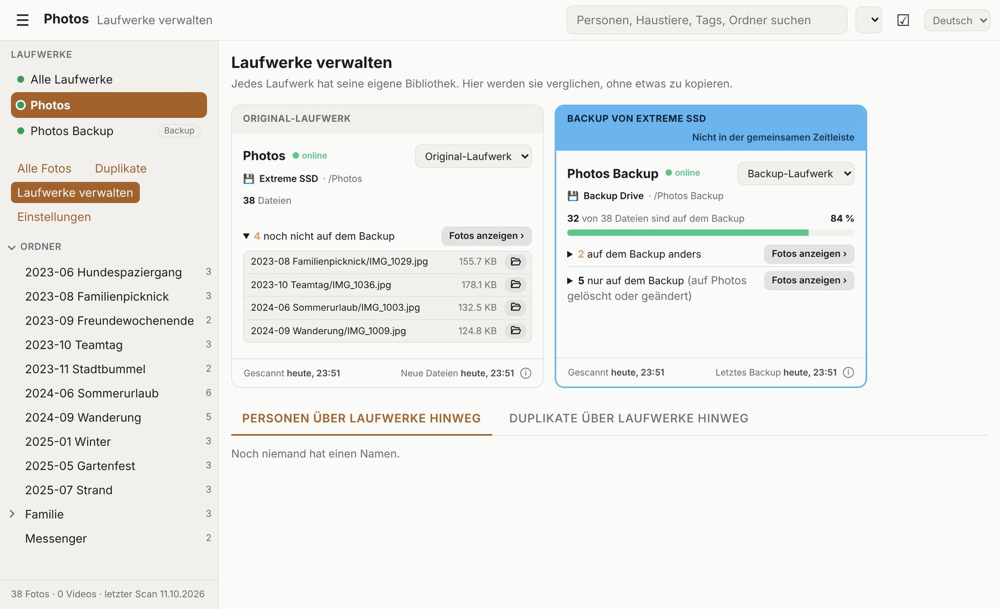
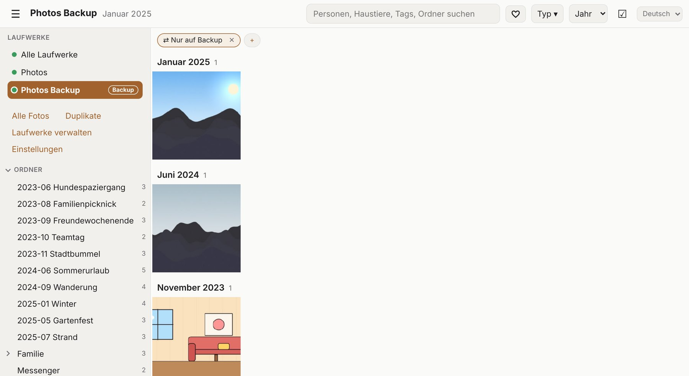
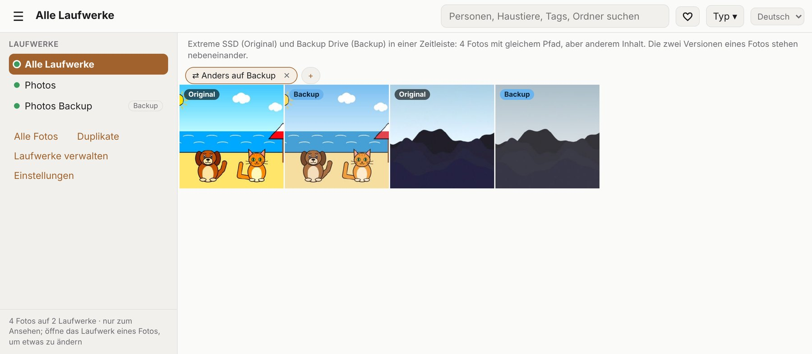
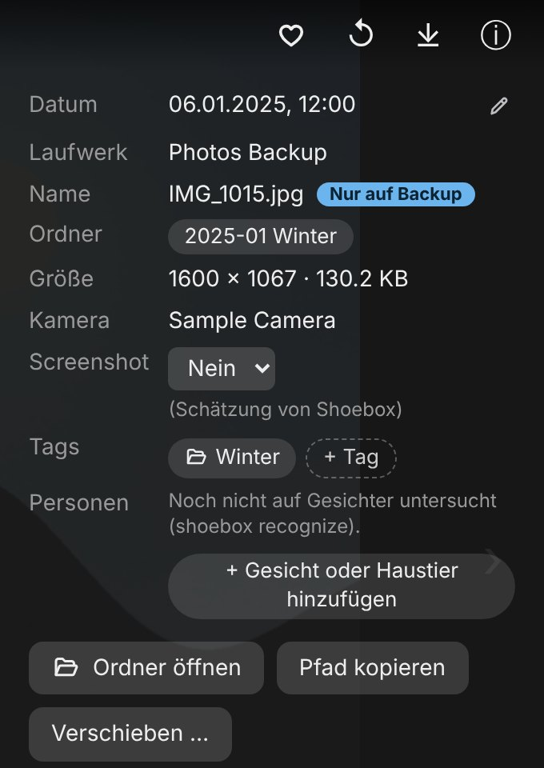
Backup-Prüfung
Erst das Original wählen, dann das Backup. shoebox vergleicht die beiden Indizes (kein Foto wird gelesen) und listet, was noch nicht auf dem Backup ist, was abweicht und was nur auf dem Backup liegt. Auch das Backup neu lesen findet Bitfäule.
iPad & andere Geräte
Im Terminal: shoebox serve /Volumes/MeinLaufwerk --lan. Es zeigt eine Adresse und eine PIN; die Adresse in Safari im selben WLAN öffnen und die PIN einmal eingeben. In der Ansicht wischen, zum Auswählen tippen.
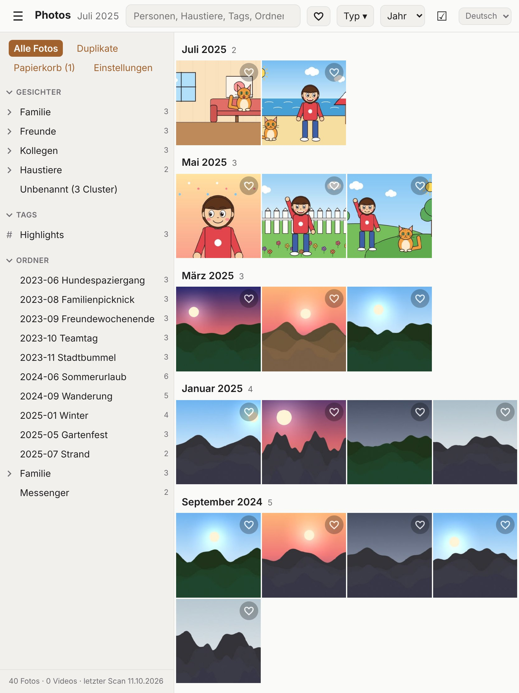
Kommandozeile (optional)
shoebox scan <Ordner>- neue, verschobene und geänderte Dateien indexieren
shoebox verify <Ordner>- Dateien neu lesen und mit dem Index vergleichen
shoebox recognize <Ordner> [--pets] [--text]- Gesichter (und Haustiere, und mit
--textdie Wörter in den Fotos lesen;--text-onlyliest nur die Wörter) finden shoebox backup <Original> <Backup>- ist das Backup vollständig?
shoebox serve <Ordner> [--lan] [--pin …]- die Foto-App öffnen
Deine Fotos sind sicher
Die Grundregel ist einfach: shoebox liest deine Originale und schreibt nie etwas hinein.
-
Nur lesen
Metadaten, Vorschaubilder, Tags und von dir festgelegte Aufnahmeorte und Daten liegen im Index auf dem Laufwerk (
.shoebox/library.db), nie in einem Foto. Aufnahme- und Erstellungsdatum ändern sich nie: ein Datum, das du einem Foto gibst, lebt nur in shoebox, und das Datum der Datei bleibt, wie es war. Ein Ordner, dessen Index neben dem Programm liegt, wird nur gelesen: in ihn wird gar nichts geschrieben, und seine Fotos können nicht verschoben, umbenannt oder gelöscht werden. -
Bewacht
Jeder Scan wird kontrolliert: Größe, Daten und eine vollständige Prüfsumme (Hash) davor und danach. Jeder Unterschied ist ein Fehler.
-
Nur auf deinen Befehl
Originale ändern sich nur durch deine Aktionen: verschieben, umbenennen, Papierkorb. Immer ein Umbenennen, nie ein Kopieren, und nur wenn die Datei noch zum Index passt. Das Einzige, was shoebox sonst entfernt, ist eine neue Kopie einer Datei, die das Laufwerk schon hatte, und nur, wenn du nach einem Scan den Knopf drückst. Exportieren liest nur deine Originale.
-
Lokal
Keine Cloud, kein Konto. Standardmäßig kann sich nur dieser Computer verbinden; andere Geräte brauchen
--lanund eine PIN. Die einzige Ausnahme sind die optionalen Karten (Einstellungen, standardmäßig aus): Dein Browser lädt dann Kartenbilder von OpenStreetMap. Die Erkennungs-Erweiterungen laufen nur aus dem shoebox-Ordner, den du gestartet hast, nie aus dem versteckten.shoebox-Ordner eines Laufwerks. -
Gefundenes kannst du vergessen
Wörter, Gesichter und Haustiere, die in deinen Fotos gefunden wurden, liegen auf dem Laufwerk in
.shoebox/recognition.db, nie in einem Foto, und lassen sich wieder löschen: siehe „Gefundenes vergessen“ und „Den Text vergessen“.
Wenn etwas komisch aussieht
Das Raster ist leer. Erst in der Zentrale Scannen, dann die Foto-App starten.
Neue Fotos fehlen. Noch einmal scannen. Das geht schnell: nur neue und geänderte Dateien werden gelesen.
Ein Video hat keine Vorschau. Scannen ausführen (auf einem Mac macht das Vorschauen für jedes Video, das QuickTime abspielen kann) oder in der Foto-App zu dem Video scrollen: Dein Browser macht eine, sobald es zum ersten Mal zu sehen ist. Bleibt sie leer, kann keiner von beiden dieses Video lesen; dann ffmpeg hinzufügen (siehe „Gut zu wissen“) und Scannen ausführen.
Das iPad verbindet sich nicht. Selbes WLAN? Mit --lan gestartet? PIN aus dem Terminal eingeben (unter Windows: dem schwarzen Fenster). Nach einem Neustart von shoebox fragt es wieder nach der PIN.
Es gibt keinen Exportieren-Knopf. Der Export speichert in die Ordner des Computers, auf dem shoebox läuft, und wird deshalb nur in einem Browser auf diesem Computer angeboten, nicht auf einem iPad. Ist ein Tag in der Suche, sitzt der Knopf neben dem Chip des Tags; für andere Fotos ☑ drücken, auswählen und in der Leiste Exportieren … benutzen.
macOS meldet, „libheif.1.dylib“ (oder „shoebox“) kann nicht geöffnet werden, da Apple darin nicht nach Schadsoftware suchen kann. shoebox wurde direkt gestartet, nicht mit Start shoebox.command. Auf OK klicken und stattdessen Start shoebox.command doppelklicken: Es nimmt den Download-Vermerk von den Dateien in program und startet dann shoebox.
Ein Laufwerk steht auf offline. Wieder anstecken; shoebox findet es beim Neuladen.
Meine Fotos liegen auf einem Server. Füge den Ordner in Schritt 2 der Zentrale mit + Ordner oder Server hinzufügen… hinzu und lege seinen Index neben das Programm (siehe „In drei Schritten loslegen“). Der Server wird nur gelesen.
„Separat (neben dem Programm)“ lässt sich nicht wählen. shoebox muss seinen Ordner libraries neben sich anlegen, was in einem Ordner wie Programme nicht erlaubt ist. Verschiebe den shoebox-Ordner nach Dokumente oder auf den Desktop.
Ein Foto steht an der falschen Stelle der Zeitleiste. Sein Datum kommt aus der Datei, dem Namen seines Ereignisordners oder den Dateidaten, und bei einem Scan oder einem über einen Messenger geschickten Bild stimmt es oft nicht. Öffne das Infofeld und drücke den Stift neben dem Datum, um ein eigenes zu setzen; siehe „Datum und Suche nach Datum“.
Eine Karte ist leer oder sagt Offline. Karten brauchen das Internet. Verbindung prüfen und das Foto noch einmal öffnen; alles andere funktioniert wie zuvor.